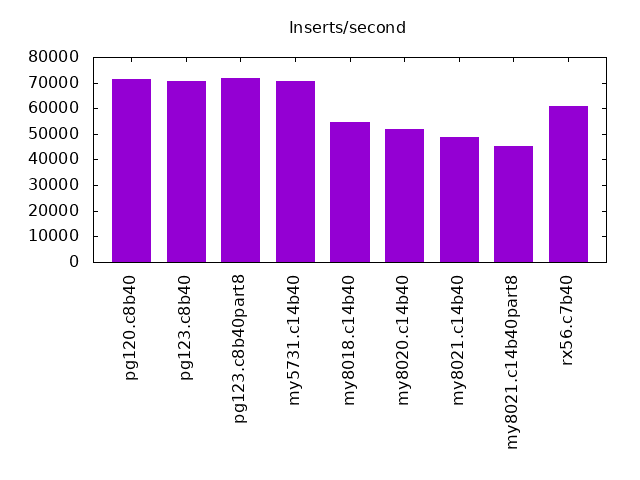
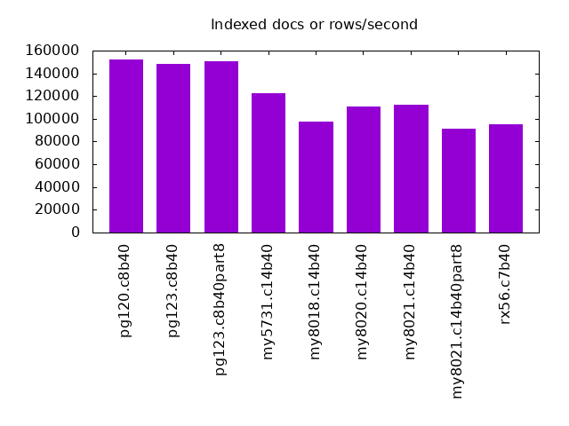
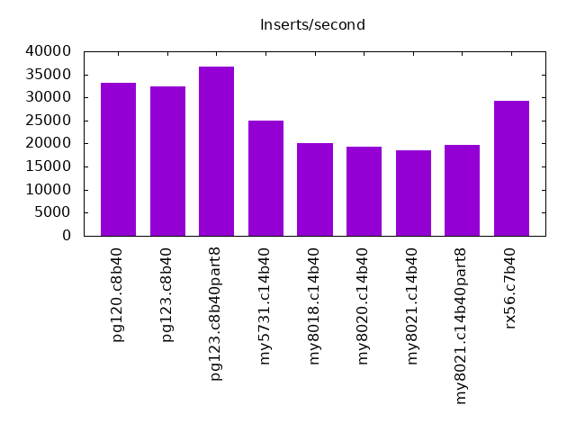
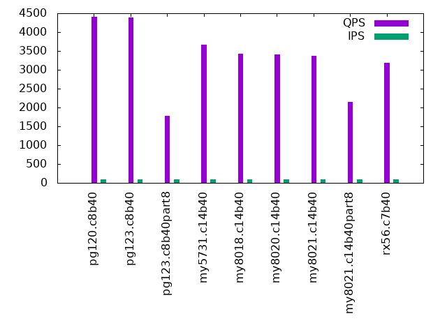
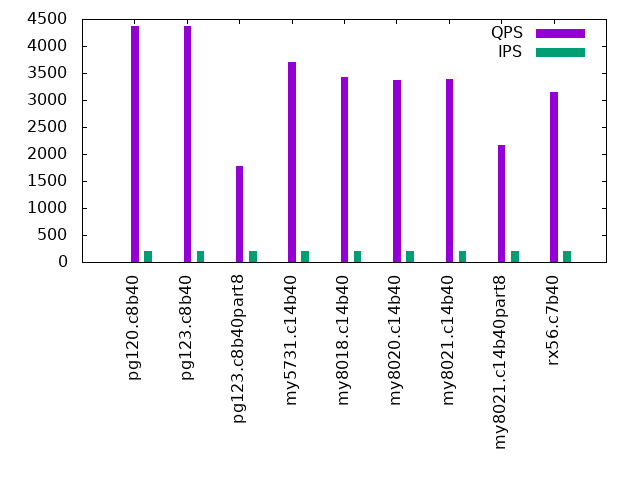
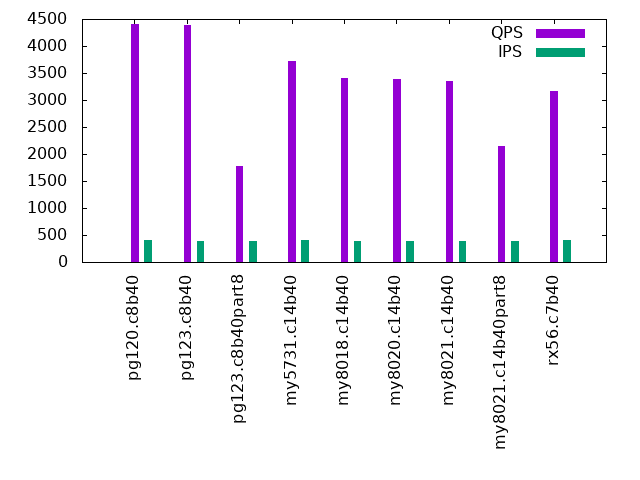
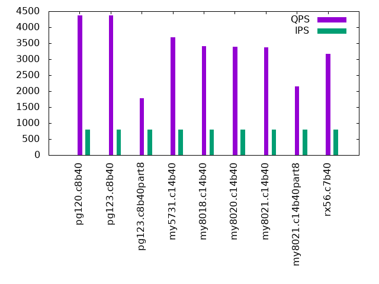
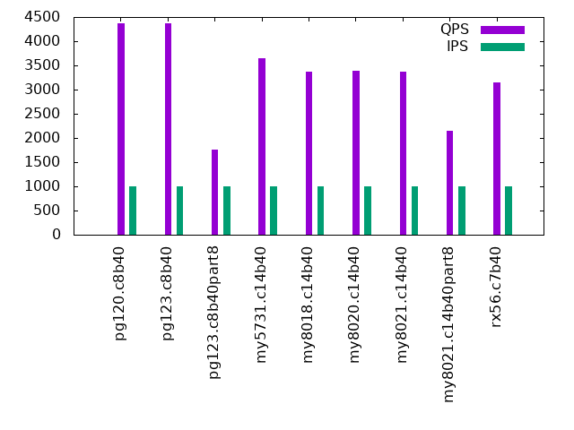

Introduction
This is a report for the insert benchmark with 15M docs and 1 clients. It is generated by scripts (bash, awk, sed) and Tufte might not be impressed. An overview of the insert benchmark is here and a short update is here. Below, by DBMS, I mean DBMS+version.config. An example is my8020.c10b40 where my means MySQL, 8020 is version 8.0.20 and c10b40 is the name for the configuration file. All configurations are stored here.
The test server is a c3.8xlarge host with 20,000 EBS PIOPs, 60G RAM and 16 CPU cores (HT disabled). Clients and the DBMS share one server.
The tested DBMS are:
- pg120.c8b40 - Postgres 12.0 with the c8b40 config
- pg123.c8b40 - Postgres 12.3 with the c8b40 config
- pg123.c8b40part8 - Postgres 12.3 with the c8b40 config. Tables are range partitioned on the transactionID column into 8 parts.
- my5731.c14b40 - MySQL 5.7.31 with InnoDB and the c14b40 config
- my8018.c14b40 - MySQL 8.0.18 with InnoDB and the c14b40 config
- my8020.c14b40 - MySQL 8.0.20 with InnoDB and the c14b40 config
- my8021.c14b40 - MySQL 8.0.21 with InnoDB and the c14b40 config
- my8021.c14b40part8 - MySQL 8.0.21 with InnoDB and the c14b40 config. Tables are range partitioned on the transactionID column into 8 parts.
- rx56.c7b40 - MySQL 5.6.35 with MyRocks and the c7b40 config
Contents
- Summary
- l.i0: load without secondary indexes
- l.x: create secondary indexes
- l.i1: continue load after secondary indexes created
- q100.2: range queries with 100 insert/s per client, 2nd loop
- q200.2: range queries with 200 insert/s per client, 2nd loop
- q400.2: range queries with 400 insert/s per client, 2nd loop
- q600.2: range queries with 600 insert/s per client, 2nd loop
- q800.2: range queries with 800 insert/s per client, 2nd loop
- q1000.2: range queries with 1000 insert/s per client, 2nd loop
Summary
The numbers are inserts/s for l.i0 and l.i1, indexed docs (or rows) /s for l.x and queries/s for q*.2. The values are the average rate over the entire test for inserts (IPS) and queries (QPS). The range of values for IPS and QPS is split into 3 parts: bottom 25%, middle 50%, top 25%. Values in the bottom 25% have a red background, values in the top 25% have a green background and values in the middle have no color. A gray background is used for values that can be ignored because the DBMS did not sustain the target insert rate. Red backgrounds are not used when the minimum value is within 80% of the max value.
| dbms | l.i0 | l.x | l.i1 | q100.2 | q200.2 | q400.2 | q600.2 | q800.2 | q1000.2 |
|---|---|---|---|---|---|---|---|---|---|
| pg120.c8b40 | 71428 | 152525 | 33259 | 4404 | 4376 | 4410 | 4374 | 4367 | 4373 |
| pg123.c8b40 | 70755 | 148039 | 32328 | 4390 | 4373 | 4388 | 4389 | 4362 | 4365 |
| pg123.c8b40part8 | 71770 | 151000 | 36675 | 1787 | 1778 | 1776 | 1777 | 1780 | 1768 |
| my5731.c14b40 | 70755 | 122764 | 24917 | 3658 | 3702 | 3714 | 3693 | 3682 | 3641 |
| my8018.c14b40 | 54744 | 97419 | 20027 | 3422 | 3419 | 3403 | 3393 | 3412 | 3372 |
| my8020.c14b40 | 52083 | 111029 | 19380 | 3404 | 3374 | 3394 | 3411 | 3385 | 3388 |
| my8021.c14b40 | 48860 | 112686 | 18450 | 3375 | 3390 | 3360 | 3398 | 3373 | 3367 |
| my8021.c14b40part8 | 45181 | 91515 | 19685 | 2157 | 2166 | 2150 | 2165 | 2153 | 2144 |
| rx56.c7b40 | 60976 | 94968 | 29183 | 3177 | 3148 | 3162 | 3146 | 3162 | 3150 |
This lists the average rate of inserts/s for the tests that do inserts concurrent with queries. For such tests the query rate is listed in the table above. The read+write tests are setup so that the insert rate should match the target rate every second. Cells that are not at least 95% of the target have a red background to indicate a failure to satisfy the target.
| dbms | q100.2 | q200.2 | q400.2 | q600.2 | q800.2 | q1000.2 |
|---|---|---|---|---|---|---|
| pg120.c8b40 | 100 | 199 | 399 | 596 | 797 | 997 |
| pg123.c8b40 | 99 | 199 | 397 | 598 | 797 | 993 |
| pg123.c8b40part8 | 100 | 199 | 397 | 598 | 797 | 993 |
| my5731.c14b40 | 100 | 199 | 399 | 598 | 795 | 997 |
| my8018.c14b40 | 99 | 199 | 397 | 598 | 797 | 993 |
| my8020.c14b40 | 99 | 199 | 397 | 598 | 795 | 997 |
| my8021.c14b40 | 99 | 199 | 397 | 598 | 797 | 993 |
| my8021.c14b40part8 | 99 | 199 | 397 | 598 | 797 | 993 |
| rx56.c7b40 | 100 | 199 | 399 | 596 | 797 | 993 |
| target | 100 | 200 | 400 | 600 | 800 | 1000 |
l.i0
l.i0: load without secondary indexes. Graphs for performance per 1-second interval are here.
Average throughput:
Insert response time histogram: each cell has the percentage of responses that take <= the time in the header and max is the max response time in seconds. For the max column values in the top 25% of the range have a red background and in the bottom 25% of the range have a green background. The red background is not used when the min value is within 80% of the max value.
| dbms | 256us | 1ms | 4ms | 16ms | 64ms | 256ms | 1s | 4s | 16s | gt | max |
|---|---|---|---|---|---|---|---|---|---|---|---|
| pg120.c8b40 | 99.999 | 0.001 | 0.004 | ||||||||
| pg123.c8b40 | 100.000 | 0.004 | |||||||||
| pg123.c8b40part8 | 99.999 | 0.001 | 0.005 | ||||||||
| my5731.c14b40 | 99.803 | 0.141 | 0.054 | 0.002 | 0.117 | ||||||
| my8018.c14b40 | 99.803 | 0.035 | 0.158 | 0.004 | 0.126 | ||||||
| my8020.c14b40 | 99.729 | 0.146 | 0.121 | 0.003 | 0.110 | ||||||
| my8021.c14b40 | 99.720 | 0.217 | 0.059 | 0.003 | 0.131 | ||||||
| my8021.c14b40part8 | 99.657 | 0.273 | 0.068 | 0.003 | 0.139 | ||||||
| rx56.c7b40 | 99.990 | 0.006 | 0.001 | 0.003 | 0.180 |
Performance metrics for the DBMS listed above. Some are normalized by throughput, others are not. Legend for results is here.
ips qps rps rkbps wkbps rpq rkbpq wkbpi csps cpups cspq cpupq dbgb1 dbgb2 rss maxop p50 p99 tag 71428 0 0 0 31197 0.000 0.000 0.437 7799 11.3 0.109 25 1.4 3.9 0.0 0.004 72120 65827 pg120.c8b40 70755 0 0 0 30511 0.000 0.000 0.431 7705 11.2 0.109 25 1.4 3.9 0.0 0.004 71122 64230 pg123.c8b40 71770 0 0 0 31823 0.000 0.000 0.443 7854 11.8 0.109 26 1.4 3.9 0.0 0.005 72517 66325 pg123.c8b40part8 70755 0 0 0 18225 0.000 0.000 0.258 6265 11.3 0.089 26 1.0 34.5 4.5 0.117 71820 63530 my5731.c14b40 54744 0 0 0 14647 0.000 0.000 0.268 13846 10.5 0.253 31 1.0 34.5 4.7 0.126 54938 48144 my8018.c14b40 52083 0 0 0 13558 0.000 0.000 0.260 13422 10.3 0.258 32 1.0 34.6 4.6 0.110 52442 46984 my8020.c14b40 48860 0 0 0 12772 0.000 0.000 0.261 12688 10.2 0.260 33 1.0 34.6 4.6 0.131 48845 42853 my8021.c14b40 45181 0 0 0 11841 0.000 0.000 0.262 11991 9.5 0.265 34 1.0 34.6 4.6 0.139 45346 39056 my8021.c14b40part8 60976 0 0 0 9220 0.000 0.000 0.151 6096 11.5 0.100 30 0.7 1.5 0.6 0.180 63829 44151 rx56.c7b40
l.x
l.x: create secondary indexes.
Average throughput:
Performance metrics for the DBMS listed above. Some are normalized by throughput, others are not. Legend for results is here.
ips qps rps rkbps wkbps rpq rkbpq wkbpi csps cpups cspq cpupq dbgb1 dbgb2 rss maxop p50 p99 tag 152525 0 0 0 25075 0.000 0.000 0.164 515 6.0 0.003 6 2.8 6.0 0.0 0.002 NA NA pg120.c8b40 148039 0 0 0 28731 0.000 0.000 0.194 485 5.9 0.003 6 2.8 6.0 0.0 0.002 NA NA pg123.c8b40 151000 0 0 0 29454 0.000 0.000 0.195 550 6.8 0.004 7 2.8 5.9 0.0 0.003 NA NA pg123.c8b40part8 122764 0 0 0 88766 0.000 0.000 0.723 12909 4.3 0.105 6 2.2 35.8 5.8 0.016 NA NA my5731.c14b40 97419 0 217 27675 71057 0.002 0.284 0.729 13548 4.2 0.139 7 2.2 35.8 6.0 0.022 NA NA my8018.c14b40 111029 0 0 0 81078 0.000 0.000 0.730 7156 4.6 0.064 7 2.2 35.8 5.8 0.020 NA NA my8020.c14b40 112686 0 0 0 82963 0.000 0.000 0.736 7208 4.7 0.064 7 2.2 35.8 5.8 0.020 NA NA my8021.c14b40 91515 0 3 52 58642 0.000 0.001 0.641 6023 3.4 0.066 6 2.2 35.8 5.4 0.018 NA NA my8021.c14b40part8 94968 0 0 15 18009 0.000 0.000 0.190 455 5.9 0.005 10 1.7 2.5 1.4 0.003 NA NA rx56.c7b40
l.i1
l.i1: continue load after secondary indexes created. Graphs for performance per 1-second interval are here.
Average throughput:
Insert response time histogram: each cell has the percentage of responses that take <= the time in the header and max is the max response time in seconds. For the max column values in the top 25% of the range have a red background and in the bottom 25% of the range have a green background. The red background is not used when the min value is within 80% of the max value.
| dbms | 256us | 1ms | 4ms | 16ms | 64ms | 256ms | 1s | 4s | 16s | gt | max |
|---|---|---|---|---|---|---|---|---|---|---|---|
| pg120.c8b40 | 99.999 | 0.001 | 0.007 | ||||||||
| pg123.c8b40 | 99.999 | 0.001 | 0.007 | ||||||||
| pg123.c8b40part8 | 1.120 | 98.879 | 0.001 | 0.007 | |||||||
| my5731.c14b40 | 98.807 | 0.607 | 0.568 | 0.018 | 0.241 | ||||||
| my8018.c14b40 | 98.823 | 0.613 | 0.545 | 0.019 | 0.218 | ||||||
| my8020.c14b40 | 98.866 | 0.706 | 0.391 | 0.037 | 0.169 | ||||||
| my8021.c14b40 | 98.785 | 0.808 | 0.366 | 0.041 | 0.173 | ||||||
| my8021.c14b40part8 | 99.326 | 0.510 | 0.151 | 0.013 | 0.203 | ||||||
| rx56.c7b40 | 99.987 | 0.011 | 0.001 | 0.001 | 0.077 |
Performance metrics for the DBMS listed above. Some are normalized by throughput, others are not. Legend for results is here.
ips qps rps rkbps wkbps rpq rkbpq wkbpi csps cpups cspq cpupq dbgb1 dbgb2 rss maxop p50 p99 tag 33259 0 0 0 38052 0.000 0.000 1.144 8359 9.0 0.251 43 6.3 15.9 0.0 0.007 34410 23374 pg120.c8b40 32328 0 0 0 36883 0.000 0.000 1.141 8156 9.0 0.252 45 6.3 15.9 0.0 0.007 33463 23025 pg123.c8b40 36675 0 0 0 40738 0.000 0.000 1.111 9189 9.7 0.251 42 6.1 15.6 0.0 0.007 36259 24422 pg123.c8b40part8 24917 0 0 0 31287 0.000 0.000 1.256 6510 8.2 0.261 53 6.0 39.6 9.2 0.241 25971 2547 my5731.c14b40 20027 0 0 0 25239 0.000 0.000 1.260 13566 7.7 0.677 62 6.0 39.6 9.4 0.218 21187 1648 my8018.c14b40 19380 0 15 240 23754 0.001 0.012 1.226 14125 7.8 0.729 64 6.0 39.6 9.4 0.169 20477 849 my8020.c14b40 18450 0 15 243 23289 0.001 0.013 1.262 14007 7.7 0.759 67 6.0 39.6 9.4 0.173 19478 699 my8021.c14b40 19685 0 1 20 14467 0.000 0.001 0.735 13058 8.0 0.663 65 5.1 38.7 8.0 0.203 19777 5294 my8021.c14b40part8 29183 0 128 2050 36416 0.004 0.070 1.248 6150 11.6 0.211 64 3.9 6.6 2.0 0.077 29467 25171 rx56.c7b40
q100.2
q100.2: range queries with 100 insert/s per client, 2nd loop. Graphs for performance per 1-second interval are here.
Average throughput:
Query response time histogram: each cell has the percentage of responses that take <= the time in the header and max is the max response time in seconds. For max values in the top 25% of the range have a red background and in the bottom 25% of the range have a green background. The red background is not used when the min value is within 80% of the max value.
| dbms | 256us | 1ms | 4ms | 16ms | 64ms | 256ms | 1s | 4s | 16s | gt | max |
|---|---|---|---|---|---|---|---|---|---|---|---|
| pg120.c8b40 | 99.992 | 0.008 | nonzero | 0.002 | |||||||
| pg123.c8b40 | 99.991 | 0.009 | nonzero | 0.003 | |||||||
| pg123.c8b40part8 | 99.999 | 0.001 | nonzero | 0.005 | |||||||
| my5731.c14b40 | 64.471 | 35.529 | nonzero | nonzero | 0.013 | ||||||
| my8018.c14b40 | 33.368 | 66.632 | nonzero | nonzero | 0.015 | ||||||
| my8020.c14b40 | 23.078 | 76.921 | nonzero | nonzero | 0.013 | ||||||
| my8021.c14b40 | 10.309 | 89.691 | nonzero | nonzero | 0.011 | ||||||
| my8021.c14b40part8 | 100.000 | nonzero | nonzero | 0.010 | |||||||
| rx56.c7b40 | 0.029 | 99.971 | nonzero | 0.001 |
Insert response time histogram: each cell has the percentage of responses that take <= the time in the header and max is the max response time in seconds. For max values in the top 25% of the range have a red background and in the bottom 25% of the range have a green background. The red background is not used when the min value is within 80% of the max value.
| dbms | 256us | 1ms | 4ms | 16ms | 64ms | 256ms | 1s | 4s | 16s | gt | max |
|---|---|---|---|---|---|---|---|---|---|---|---|
| pg120.c8b40 | 99.667 | 0.333 | 0.007 | ||||||||
| pg123.c8b40 | 99.667 | 0.333 | 0.006 | ||||||||
| pg123.c8b40part8 | 99.833 | 0.167 | 0.005 | ||||||||
| my5731.c14b40 | 98.833 | 1.000 | 0.167 | 0.082 | |||||||
| my8018.c14b40 | 98.833 | 0.167 | 1.000 | 0.028 | |||||||
| my8020.c14b40 | 99.000 | 1.000 | 0.018 | ||||||||
| my8021.c14b40 | 98.500 | 0.500 | 1.000 | 0.020 | |||||||
| my8021.c14b40part8 | 99.667 | 0.333 | 0.017 | ||||||||
| rx56.c7b40 | 100.000 | 0.003 |
Performance metrics for the DBMS listed above. Some are normalized by throughput, others are not. Legend for results is here.
ips qps rps rkbps wkbps rpq rkbpq wkbpi csps cpups cspq cpupq dbgb1 dbgb2 rss maxop p50 p99 tag 100 4404 0 0 131 0.000 0.000 1.311 17372 3.9 3.945 142 6.3 15.9 0.0 0.002 4411 4283 pg120.c8b40 99 4390 0 0 131 0.000 0.000 1.316 17392 3.9 3.962 142 6.3 15.9 0.0 0.003 4411 4315 pg123.c8b40 100 1787 0 0 130 0.000 0.000 1.308 7213 5.8 4.036 519 6.1 15.6 0.0 0.005 1790 1710 pg123.c8b40part8 100 3658 0 0 154 0.000 0.000 1.546 14442 4.9 3.948 214 6.1 39.6 9.3 0.013 3660 3612 my5731.c14b40 99 3422 0 0 142 0.000 0.000 1.427 14125 4.9 4.128 229 6.1 39.6 9.5 0.015 3436 3388 my8018.c14b40 99 3404 0 0 141 0.000 0.000 1.421 14019 5.0 4.118 235 6.1 39.6 9.4 0.013 3420 3372 my8020.c14b40 99 3375 0 0 141 0.000 0.000 1.422 13896 5.0 4.118 237 6.1 39.6 9.4 0.011 3388 3340 my8021.c14b40 99 2157 0 0 71 0.000 0.000 0.716 9149 5.8 4.241 430 5.1 38.7 8.6 0.010 2173 2125 my8021.c14b40part8 100 3177 0 0 25 0.000 0.000 0.247 12532 5.2 3.944 262 3.5 6.2 3.3 0.001 3181 3148 rx56.c7b40
q200.2
q200.2: range queries with 200 insert/s per client, 2nd loop. Graphs for performance per 1-second interval are here.
Average throughput:
Query response time histogram: each cell has the percentage of responses that take <= the time in the header and max is the max response time in seconds. For max values in the top 25% of the range have a red background and in the bottom 25% of the range have a green background. The red background is not used when the min value is within 80% of the max value.
| dbms | 256us | 1ms | 4ms | 16ms | 64ms | 256ms | 1s | 4s | 16s | gt | max |
|---|---|---|---|---|---|---|---|---|---|---|---|
| pg120.c8b40 | 99.982 | 0.018 | nonzero | 0.002 | |||||||
| pg123.c8b40 | 99.983 | 0.016 | nonzero | 0.002 | |||||||
| pg123.c8b40part8 | 99.998 | 0.001 | nonzero | 0.006 | |||||||
| my5731.c14b40 | 65.799 | 34.200 | nonzero | 0.011 | |||||||
| my8018.c14b40 | 26.021 | 73.978 | nonzero | 0.001 | nonzero | 0.016 | |||||
| my8020.c14b40 | 7.242 | 92.758 | nonzero | nonzero | 0.014 | ||||||
| my8021.c14b40 | 10.612 | 89.387 | nonzero | 0.001 | nonzero | 0.025 | |||||
| my8021.c14b40part8 | 99.999 | nonzero | nonzero | 0.013 | |||||||
| rx56.c7b40 | 0.030 | 99.970 | nonzero | 0.001 |
Insert response time histogram: each cell has the percentage of responses that take <= the time in the header and max is the max response time in seconds. For max values in the top 25% of the range have a red background and in the bottom 25% of the range have a green background. The red background is not used when the min value is within 80% of the max value.
| dbms | 256us | 1ms | 4ms | 16ms | 64ms | 256ms | 1s | 4s | 16s | gt | max |
|---|---|---|---|---|---|---|---|---|---|---|---|
| pg120.c8b40 | 99.833 | 0.167 | 0.006 | ||||||||
| pg123.c8b40 | 99.833 | 0.167 | 0.006 | ||||||||
| pg123.c8b40part8 | 99.917 | 0.083 | 0.005 | ||||||||
| my5731.c14b40 | 99.000 | 0.333 | 0.667 | 0.032 | |||||||
| my8018.c14b40 | 98.917 | 0.083 | 1.000 | 0.026 | |||||||
| my8020.c14b40 | 98.833 | 0.167 | 1.000 | 0.021 | |||||||
| my8021.c14b40 | 98.500 | 0.750 | 0.750 | 0.033 | |||||||
| my8021.c14b40part8 | 99.667 | 0.167 | 0.167 | 0.017 | |||||||
| rx56.c7b40 | 100.000 | 0.003 |
Performance metrics for the DBMS listed above. Some are normalized by throughput, others are not. Legend for results is here.
ips qps rps rkbps wkbps rpq rkbpq wkbpi csps cpups cspq cpupq dbgb1 dbgb2 rss maxop p50 p99 tag 199 4376 0 0 249 0.000 0.000 1.256 17336 3.9 3.962 143 6.3 16.0 0.0 0.002 4395 4299 pg120.c8b40 199 4373 0 0 251 0.000 0.000 1.261 17278 3.9 3.952 143 6.3 16.0 0.0 0.002 4379 4299 pg123.c8b40 199 1778 0 0 195 0.000 0.000 0.978 7196 5.9 4.048 531 6.2 15.7 0.0 0.006 1790 1710 pg123.c8b40part8 199 3702 0 0 269 0.000 0.000 1.352 14679 4.9 3.965 212 6.2 39.7 9.3 0.011 3724 3676 my5731.c14b40 199 3419 0 0 275 0.000 0.000 1.378 14325 5.3 4.190 248 6.2 39.7 9.6 0.016 3420 3356 my8018.c14b40 199 3374 0 0 901 0.000 0.000 4.522 14028 5.5 4.158 261 6.2 39.7 9.5 0.014 3388 3292 my8020.c14b40 199 3390 0 0 274 0.000 0.000 1.375 13963 5.4 4.119 255 6.2 39.7 9.5 0.025 3404 3340 my8021.c14b40 199 2166 0 0 122 0.000 0.000 0.610 9217 5.7 4.254 421 5.2 38.7 8.6 0.013 2174 2141 my8021.c14b40part8 199 3148 0 0 43 0.000 0.000 0.216 12467 5.4 3.960 274 3.5 6.2 3.4 0.001 3164 3132 rx56.c7b40
q400.2
q400.2: range queries with 400 insert/s per client, 2nd loop. Graphs for performance per 1-second interval are here.
Average throughput:
Query response time histogram: each cell has the percentage of responses that take <= the time in the header and max is the max response time in seconds. For max values in the top 25% of the range have a red background and in the bottom 25% of the range have a green background. The red background is not used when the min value is within 80% of the max value.
| dbms | 256us | 1ms | 4ms | 16ms | 64ms | 256ms | 1s | 4s | 16s | gt | max |
|---|---|---|---|---|---|---|---|---|---|---|---|
| pg120.c8b40 | 99.957 | 0.043 | nonzero | 0.002 | |||||||
| pg123.c8b40 | 99.963 | 0.037 | nonzero | 0.002 | |||||||
| pg123.c8b40part8 | 99.996 | 0.003 | nonzero | 0.005 | |||||||
| my5731.c14b40 | 65.768 | 34.231 | nonzero | 0.001 | nonzero | 0.025 | |||||
| my8018.c14b40 | 25.712 | 74.287 | nonzero | 0.001 | nonzero | 0.045 | |||||
| my8020.c14b40 | 22.229 | 77.769 | nonzero | 0.001 | 0.013 | ||||||
| my8021.c14b40 | 5.112 | 94.886 | nonzero | 0.001 | 0.015 | ||||||
| my8021.c14b40part8 | 99.999 | nonzero | nonzero | nonzero | 0.022 | ||||||
| rx56.c7b40 | 0.027 | 99.968 | 0.005 | 0.002 |
Insert response time histogram: each cell has the percentage of responses that take <= the time in the header and max is the max response time in seconds. For max values in the top 25% of the range have a red background and in the bottom 25% of the range have a green background. The red background is not used when the min value is within 80% of the max value.
| dbms | 256us | 1ms | 4ms | 16ms | 64ms | 256ms | 1s | 4s | 16s | gt | max |
|---|---|---|---|---|---|---|---|---|---|---|---|
| pg120.c8b40 | 99.917 | 0.083 | 0.006 | ||||||||
| pg123.c8b40 | 99.917 | 0.083 | 0.006 | ||||||||
| pg123.c8b40part8 | 99.958 | 0.042 | 0.005 | ||||||||
| my5731.c14b40 | 99.042 | 0.208 | 0.750 | 0.034 | |||||||
| my8018.c14b40 | 99.083 | 0.917 | 0.049 | ||||||||
| my8020.c14b40 | 99.083 | 0.167 | 0.750 | 0.026 | |||||||
| my8021.c14b40 | 98.917 | 0.167 | 0.917 | 0.032 | |||||||
| my8021.c14b40part8 | 99.708 | 0.083 | 0.208 | 0.024 | |||||||
| rx56.c7b40 | 99.917 | 0.083 | 0.012 |
Performance metrics for the DBMS listed above. Some are normalized by throughput, others are not. Legend for results is here.
ips qps rps rkbps wkbps rpq rkbpq wkbpi csps cpups cspq cpupq dbgb1 dbgb2 rss maxop p50 p99 tag 399 4410 0 0 441 0.000 0.000 1.106 17550 3.9 3.980 141 6.4 16.1 0.0 0.002 4427 4347 pg120.c8b40 397 4388 0 0 441 0.000 0.000 1.109 17442 3.9 3.975 142 6.4 16.1 0.0 0.002 4411 4299 pg123.c8b40 397 1776 0 0 434 0.000 0.000 1.092 7272 6.0 4.094 540 6.2 15.9 0.0 0.005 1790 1726 pg123.c8b40part8 399 3714 0 0 496 0.000 0.000 1.245 14699 4.9 3.957 211 6.4 39.9 9.5 0.025 3724 3628 my5731.c14b40 397 3403 0 0 504 0.000 0.000 1.269 14223 5.1 4.179 240 6.4 39.9 9.7 0.045 3420 3340 my8018.c14b40 397 3394 0 0 489 0.000 0.000 1.232 14156 5.1 4.171 240 6.3 39.9 9.7 0.013 3420 3340 my8020.c14b40 397 3360 0 0 504 0.000 0.000 1.270 14048 5.5 4.181 262 6.4 39.9 9.7 0.015 3372 3324 my8021.c14b40 397 2150 0 0 236 0.000 0.000 0.595 9277 5.8 4.316 432 5.2 38.8 8.6 0.022 2158 2125 my8021.c14b40part8 399 3162 0 0 2896 0.000 0.000 7.267 12558 5.5 3.971 278 3.5 6.3 3.7 0.002 3180 2749 rx56.c7b40
q600.2
q600.2: range queries with 600 insert/s per client, 2nd loop. Graphs for performance per 1-second interval are here.
Average throughput:

Query response time histogram: each cell has the percentage of responses that take <= the time in the header and max is the max response time in seconds. For max values in the top 25% of the range have a red background and in the bottom 25% of the range have a green background. The red background is not used when the min value is within 80% of the max value.
| dbms | 256us | 1ms | 4ms | 16ms | 64ms | 256ms | 1s | 4s | 16s | gt | max |
|---|---|---|---|---|---|---|---|---|---|---|---|
| pg120.c8b40 | 99.939 | 0.061 | nonzero | 0.002 | |||||||
| pg123.c8b40 | 99.944 | 0.055 | nonzero | 0.002 | |||||||
| pg123.c8b40part8 | 99.994 | 0.006 | nonzero | 0.005 | |||||||
| my5731.c14b40 | 65.429 | 34.570 | 0.001 | 0.001 | 0.059 | ||||||
| my8018.c14b40 | 16.316 | 83.683 | nonzero | 0.001 | nonzero | 0.051 | |||||
| my8020.c14b40 | 24.512 | 75.487 | nonzero | 0.001 | 0.001 | 0.047 | |||||
| my8021.c14b40 | 12.923 | 87.076 | nonzero | 0.001 | nonzero | 0.019 | |||||
| my8021.c14b40part8 | 99.999 | nonzero | 0.001 | nonzero | 0.021 | ||||||
| rx56.c7b40 | 0.019 | 99.981 | nonzero | 0.001 |
Insert response time histogram: each cell has the percentage of responses that take <= the time in the header and max is the max response time in seconds. For max values in the top 25% of the range have a red background and in the bottom 25% of the range have a green background. The red background is not used when the min value is within 80% of the max value.
| dbms | 256us | 1ms | 4ms | 16ms | 64ms | 256ms | 1s | 4s | 16s | gt | max |
|---|---|---|---|---|---|---|---|---|---|---|---|
| pg120.c8b40 | 99.944 | 0.056 | 0.006 | ||||||||
| pg123.c8b40 | 99.944 | 0.056 | 0.006 | ||||||||
| pg123.c8b40part8 | 99.972 | 0.028 | 0.005 | ||||||||
| my5731.c14b40 | 99.250 | 0.167 | 0.583 | 0.061 | |||||||
| my8018.c14b40 | 99.278 | 0.694 | 0.028 | 0.068 | |||||||
| my8020.c14b40 | 99.222 | 0.028 | 0.750 | 0.050 | |||||||
| my8021.c14b40 | 99.111 | 0.306 | 0.583 | 0.036 | |||||||
| my8021.c14b40part8 | 99.667 | 0.111 | 0.222 | 0.023 | |||||||
| rx56.c7b40 | 100.000 | 0.003 |
Performance metrics for the DBMS listed above. Some are normalized by throughput, others are not. Legend for results is here.
ips qps rps rkbps wkbps rpq rkbpq wkbpi csps cpups cspq cpupq dbgb1 dbgb2 rss maxop p50 p99 tag 596 4374 0 0 698 0.000 0.000 1.171 17442 4.0 3.987 146 6.5 16.4 0.0 0.002 4411 4299 pg120.c8b40 598 4389 0 0 684 0.000 0.000 1.145 17433 4.0 3.972 146 6.5 16.4 0.0 0.002 4395 4331 pg123.c8b40 598 1777 0 0 676 0.000 0.000 1.131 7287 6.0 4.101 540 6.3 16.1 0.0 0.005 1790 1710 pg123.c8b40part8 598 3693 0 0 1309 0.000 0.000 2.188 14732 5.0 3.990 217 6.6 40.1 9.7 0.059 3708 3516 my5731.c14b40 598 3393 0 0 635 0.000 0.000 1.062 14261 5.4 4.203 255 6.6 40.1 9.9 0.051 3404 3260 my8018.c14b40 598 3411 0 0 634 0.000 0.000 1.061 14304 5.7 4.194 267 6.6 40.1 9.9 0.047 3420 3324 my8020.c14b40 598 3398 0 0 863 0.000 0.000 1.443 14272 5.7 4.200 268 6.6 40.1 9.9 0.019 3404 3340 my8021.c14b40 598 2165 0 0 365 0.000 0.000 0.611 9411 5.8 4.346 429 5.3 38.9 8.7 0.021 2173 2125 my8021.c14b40part8 596 3146 0 0 116 0.000 0.000 0.194 12535 5.6 3.984 285 3.5 6.3 3.8 0.001 3164 3132 rx56.c7b40
q800.2
q800.2: range queries with 800 insert/s per client, 2nd loop. Graphs for performance per 1-second interval are here.
Average throughput:
Query response time histogram: each cell has the percentage of responses that take <= the time in the header and max is the max response time in seconds. For max values in the top 25% of the range have a red background and in the bottom 25% of the range have a green background. The red background is not used when the min value is within 80% of the max value.
| dbms | 256us | 1ms | 4ms | 16ms | 64ms | 256ms | 1s | 4s | 16s | gt | max |
|---|---|---|---|---|---|---|---|---|---|---|---|
| pg120.c8b40 | 99.187 | 0.813 | nonzero | 0.002 | |||||||
| pg123.c8b40 | 99.106 | 0.894 | nonzero | 0.002 | |||||||
| pg123.c8b40part8 | 99.981 | 0.019 | nonzero | 0.005 | |||||||
| my5731.c14b40 | 65.521 | 34.478 | nonzero | 0.001 | nonzero | 0.016 | |||||
| my8018.c14b40 | 24.292 | 75.706 | nonzero | 0.001 | nonzero | 0.021 | |||||
| my8020.c14b40 | 19.039 | 80.959 | nonzero | 0.001 | nonzero | nonzero | 0.083 | ||||
| my8021.c14b40 | 4.709 | 95.289 | nonzero | 0.001 | nonzero | 0.032 | |||||
| my8021.c14b40part8 | 99.999 | nonzero | 0.001 | 0.014 | |||||||
| rx56.c7b40 | 0.027 | 99.973 | nonzero | 0.001 |
Insert response time histogram: each cell has the percentage of responses that take <= the time in the header and max is the max response time in seconds. For max values in the top 25% of the range have a red background and in the bottom 25% of the range have a green background. The red background is not used when the min value is within 80% of the max value.
| dbms | 256us | 1ms | 4ms | 16ms | 64ms | 256ms | 1s | 4s | 16s | gt | max |
|---|---|---|---|---|---|---|---|---|---|---|---|
| pg120.c8b40 | 9.771 | 54.750 | 35.479 | 0.039 | |||||||
| pg123.c8b40 | 4.458 | 60.188 | 35.354 | 0.040 | |||||||
| pg123.c8b40part8 | 84.229 | 11.104 | 4.667 | 0.038 | |||||||
| my5731.c14b40 | 99.479 | 0.146 | 0.375 | 0.027 | |||||||
| my8018.c14b40 | 99.396 | 0.042 | 0.562 | 0.042 | |||||||
| my8020.c14b40 | 99.479 | 0.500 | 0.021 | 0.093 | |||||||
| my8021.c14b40 | 99.438 | 0.104 | 0.458 | 0.042 | |||||||
| my8021.c14b40part8 | 99.812 | 0.042 | 0.146 | 0.020 | |||||||
| rx56.c7b40 | 100.000 | 0.003 |
Performance metrics for the DBMS listed above. Some are normalized by throughput, others are not. Legend for results is here.
ips qps rps rkbps wkbps rpq rkbpq wkbpi csps cpups cspq cpupq dbgb1 dbgb2 rss maxop p50 p99 tag 797 4367 0 0 9519 0.000 0.000 11.939 17580 5.5 4.025 202 6.6 17.6 0.0 0.002 4379 4299 pg120.c8b40 797 4362 0 0 9741 0.000 0.000 12.218 17573 5.6 4.028 205 6.6 17.7 0.0 0.002 4379 4267 pg123.c8b40 797 1780 0 0 3249 0.000 0.000 4.075 7444 6.1 4.182 548 6.4 16.5 0.0 0.005 1790 1726 pg123.c8b40part8 795 3682 0 0 1342 0.000 0.000 1.689 14780 5.2 4.014 226 6.8 40.3 9.9 0.016 3708 3612 my5731.c14b40 797 3412 0 0 1413 0.000 0.000 1.772 14545 5.7 4.263 267 6.8 40.3 10.1 0.021 3420 3324 my8018.c14b40 795 3385 0 0 673 0.000 0.000 0.847 14386 5.7 4.250 269 6.8 40.4 10.1 0.083 3404 3308 my8020.c14b40 797 3373 0 0 1308 0.000 0.000 1.640 14396 5.8 4.268 275 6.8 40.4 10.1 0.032 3388 3276 my8021.c14b40 797 2153 0 0 404 0.000 0.000 0.507 9531 6.1 4.426 453 5.4 39.0 8.8 0.014 2158 2110 my8021.c14b40part8 797 3162 0 0 152 0.000 0.000 0.191 12617 5.6 3.990 283 3.6 6.4 4.3 0.001 3165 3132 rx56.c7b40
q1000.2
q1000.2: range queries with 1000 insert/s per client, 2nd loop. Graphs for performance per 1-second interval are here.
Average throughput:
Query response time histogram: each cell has the percentage of responses that take <= the time in the header and max is the max response time in seconds. For max values in the top 25% of the range have a red background and in the bottom 25% of the range have a green background. The red background is not used when the min value is within 80% of the max value.
| dbms | 256us | 1ms | 4ms | 16ms | 64ms | 256ms | 1s | 4s | 16s | gt | max |
|---|---|---|---|---|---|---|---|---|---|---|---|
| pg120.c8b40 | 99.646 | 0.354 | nonzero | 0.002 | |||||||
| pg123.c8b40 | 99.599 | 0.401 | nonzero | 0.002 | |||||||
| pg123.c8b40part8 | 99.988 | 0.012 | nonzero | 0.005 | |||||||
| my5731.c14b40 | 64.277 | 35.722 | 0.001 | nonzero | 0.023 | ||||||
| my8018.c14b40 | 10.599 | 89.400 | nonzero | nonzero | 0.001 | 0.021 | |||||
| my8020.c14b40 | 14.212 | 85.787 | nonzero | 0.001 | nonzero | 0.042 | |||||
| my8021.c14b40 | 7.605 | 92.394 | nonzero | 0.001 | nonzero | 0.017 | |||||
| my8021.c14b40part8 | 99.999 | nonzero | nonzero | 0.014 | |||||||
| rx56.c7b40 | 0.013 | 99.987 | nonzero | 0.001 |
Insert response time histogram: each cell has the percentage of responses that take <= the time in the header and max is the max response time in seconds. For max values in the top 25% of the range have a red background and in the bottom 25% of the range have a green background. The red background is not used when the min value is within 80% of the max value.
| dbms | 256us | 1ms | 4ms | 16ms | 64ms | 256ms | 1s | 4s | 16s | gt | max |
|---|---|---|---|---|---|---|---|---|---|---|---|
| pg120.c8b40 | 99.883 | 0.117 | 0.007 | ||||||||
| pg123.c8b40 | 99.917 | 0.083 | 0.007 | ||||||||
| pg123.c8b40part8 | 99.983 | 0.017 | 0.006 | ||||||||
| my5731.c14b40 | 99.683 | 0.067 | 0.250 | 0.026 | |||||||
| my8018.c14b40 | 99.617 | 0.017 | 0.367 | 0.050 | |||||||
| my8020.c14b40 | 99.667 | 0.333 | 0.044 | ||||||||
| my8021.c14b40 | 99.650 | 0.100 | 0.250 | 0.023 | |||||||
| my8021.c14b40part8 | 99.767 | 0.083 | 0.150 | 0.021 | |||||||
| rx56.c7b40 | 100.000 | 0.003 |
Performance metrics for the DBMS listed above. Some are normalized by throughput, others are not. Legend for results is here.
ips qps rps rkbps wkbps rpq rkbpq wkbpi csps cpups cspq cpupq dbgb1 dbgb2 rss maxop p50 p99 tag 997 4373 0 0 3452 0.000 0.000 3.464 17577 4.6 4.019 168 6.8 18.2 0.0 0.002 4395 4267 pg120.c8b40 993 4365 0 0 3462 0.000 0.000 3.485 17590 4.4 4.030 161 6.8 18.2 0.0 0.002 4395 4299 pg123.c8b40 993 1768 0 0 2832 0.000 0.000 2.851 7468 6.0 4.223 543 6.5 16.9 0.0 0.005 1774 1694 pg123.c8b40part8 997 3641 0 0 1325 0.000 0.000 1.330 14633 5.8 4.019 255 7.0 40.5 10.0 0.023 3644 3564 my5731.c14b40 993 3372 0 0 1241 0.000 0.000 1.249 14565 5.8 4.319 275 7.0 40.5 10.3 0.021 3388 3308 my8018.c14b40 997 3388 0 0 648 0.000 0.000 0.651 14450 5.8 4.265 274 7.0 40.5 10.2 0.042 3404 3276 my8020.c14b40 993 3367 0 0 1339 0.000 0.000 1.348 14604 5.8 4.337 276 7.0 40.5 10.2 0.017 3388 3324 my8021.c14b40 993 2144 0 0 998 0.000 0.000 1.005 9662 6.1 4.508 455 5.5 39.0 8.9 0.014 2158 2125 my8021.c14b40part8 993 3150 0 0 188 0.000 0.000 0.189 12732 5.5 4.042 279 3.7 6.6 4.7 0.001 3164 3116 rx56.c7b40
l.i0
l.i0: load without secondary indexes
Performance metrics for all DBMS, not just the ones listed above. Some are normalized by throughput, others are not. Legend for results is here.
ips qps rps rkbps wkbps rpq rkbpq wkbpi csps cpups cspq cpupq dbgb1 dbgb2 rss maxop p50 p99 tag 70755 0 0 0 30511 0.000 0.000 0.431 7705 11.2 0.109 25 1.4 3.9 0.0 0.004 71122 64230 pg123.c8b40 48860 0 0 0 12772 0.000 0.000 0.261 12688 10.2 0.260 33 1.0 34.6 4.6 0.131 48845 42853 my8021.c14b40 60976 0 0 0 9220 0.000 0.000 0.151 6096 11.5 0.100 30 0.7 1.5 0.6 0.180 63829 44151 rx56.c7b40 - 71428 0 0 0 31197 0.000 0.000 0.437 7799 11.3 0.109 25 1.4 3.9 0.0 0.004 72120 65827 pg120.c8b40 70755 0 0 0 30511 0.000 0.000 0.431 7705 11.2 0.109 25 1.4 3.9 0.0 0.004 71122 64230 pg123.c8b40 - 70755 0 0 0 18225 0.000 0.000 0.258 6265 11.3 0.089 26 1.0 34.5 4.5 0.117 71820 63530 my5731.c14b40 54744 0 0 0 14647 0.000 0.000 0.268 13846 10.5 0.253 31 1.0 34.5 4.7 0.126 54938 48144 my8018.c14b40 52083 0 0 0 13558 0.000 0.000 0.260 13422 10.3 0.258 32 1.0 34.6 4.6 0.110 52442 46984 my8020.c14b40 48860 0 0 0 12772 0.000 0.000 0.261 12688 10.2 0.260 33 1.0 34.6 4.6 0.131 48845 42853 my8021.c14b40 - 70093 0 0 0 18460 0.000 0.000 0.263 6229 11.3 0.089 26 1.0 34.5 7.0 0.090 70721 59135 my5731.c15b40 52632 0 0 0 14545 0.000 0.000 0.276 14025 10.5 0.266 32 1.0 34.6 7.2 0.136 52740 46947 my8018.c15b40 50167 0 0 0 13446 0.000 0.000 0.268 13233 9.8 0.264 31 1.0 34.6 7.2 0.150 50443 43950 my8020.c15b40 48232 0 0 0 13155 0.000 0.000 0.273 12936 9.8 0.268 33 1.0 34.6 7.1 0.159 48546 40684 my8021.c15b40 - 60976 0 0 0 9220 0.000 0.000 0.151 6096 11.5 0.100 30 0.7 1.5 0.6 0.180 63829 44151 rx56.c7b40 - 71770 0 0 0 31823 0.000 0.000 0.443 7854 11.8 0.109 26 1.4 3.9 0.0 0.005 72517 66325 pg123.c8b40part8 - 70422 0 0 0 18021 0.000 0.000 0.256 5995 11.9 0.085 27 1.0 34.5 4.5 0.061 70722 63030 my5731.c14b40part8 51903 0 0 0 14009 0.000 0.000 0.270 13057 9.9 0.252 31 1.0 34.6 4.7 0.104 52238 46847 my8018.c14b40part8 47468 0 0 0 12524 0.000 0.000 0.264 12254 9.5 0.258 32 1.0 34.6 4.6 0.141 47748 42194 my8020.c14b40part8 45181 0 0 0 11841 0.000 0.000 0.262 11991 9.5 0.265 34 1.0 34.6 4.6 0.139 45346 39056 my8021.c14b40part8 - 69767 0 0 0 18512 0.000 0.000 0.265 6782 12.0 0.097 28 1.0 34.6 7.0 0.083 70519 58835 my5731.c15b40part8 51020 0 0 0 14158 0.000 0.000 0.277 12989 10.1 0.255 32 1.0 34.6 7.2 0.134 51240 45650 my8018.c15b40part8 47022 0 0 0 12642 0.000 0.000 0.269 12212 9.5 0.260 32 1.0 34.6 7.2 0.118 47347 40355 my8020.c15b40part8 43605 0 0 0 11886 0.000 0.000 0.273 12611 9.5 0.289 35 1.0 34.6 7.1 0.115 43851 38657 my8021.c15b40part8 - 72115 0 0 0 31335 0.000 0.000 0.435 7782 11.9 0.108 26 1.4 3.9 0.0 0.004 72418 66523 pg123.c8b40vac0 71428 0 0 0 31157 0.000 0.000 0.436 7830 11.9 0.110 27 1.4 3.9 0.0 0.006 71920 65596 pg123.c8b40vac1
l.x
l.x: create secondary indexes
Performance metrics for all DBMS, not just the ones listed above. Some are normalized by throughput, others are not. Legend for results is here.
ips qps rps rkbps wkbps rpq rkbpq wkbpi csps cpups cspq cpupq dbgb1 dbgb2 rss maxop p50 p99 tag 148039 0 0 0 28731 0.000 0.000 0.194 485 5.9 0.003 6 2.8 6.0 0.0 0.002 NA NA pg123.c8b40 112686 0 0 0 82963 0.000 0.000 0.736 7208 4.7 0.064 7 2.2 35.8 5.8 0.020 NA NA my8021.c14b40 94968 0 0 15 18009 0.000 0.000 0.190 455 5.9 0.005 10 1.7 2.5 1.4 0.003 NA NA rx56.c7b40 - 152525 0 0 0 25075 0.000 0.000 0.164 515 6.0 0.003 6 2.8 6.0 0.0 0.002 NA NA pg120.c8b40 148039 0 0 0 28731 0.000 0.000 0.194 485 5.9 0.003 6 2.8 6.0 0.0 0.002 NA NA pg123.c8b40 - 122764 0 0 0 88766 0.000 0.000 0.723 12909 4.3 0.105 6 2.2 35.8 5.8 0.016 NA NA my5731.c14b40 97419 0 217 27675 71057 0.002 0.284 0.729 13548 4.2 0.139 7 2.2 35.8 6.0 0.022 NA NA my8018.c14b40 111029 0 0 0 81078 0.000 0.000 0.730 7156 4.6 0.064 7 2.2 35.8 5.8 0.020 NA NA my8020.c14b40 112686 0 0 0 82963 0.000 0.000 0.736 7208 4.7 0.064 7 2.2 35.8 5.8 0.020 NA NA my8021.c14b40 - 96178 0 0 25 68829 0.000 0.000 0.716 12493 3.3 0.130 5 2.3 35.8 8.3 0.016 NA NA my5731.c15b40 82065 0 158 20086 58948 0.002 0.245 0.718 10702 3.9 0.130 8 2.2 35.8 8.6 0.017 NA NA my8018.c15b40 82967 0 0 0 60061 0.000 0.000 0.724 7866 3.5 0.095 7 2.2 35.8 8.3 0.032 NA NA my8020.c15b40 85311 0 0 0 61449 0.000 0.000 0.720 7729 3.5 0.091 7 2.2 35.8 8.3 0.015 NA NA my8021.c15b40 - 94968 0 0 15 18009 0.000 0.000 0.190 455 5.9 0.005 10 1.7 2.5 1.4 0.003 NA NA rx56.c7b40 - 151000 0 0 0 29454 0.000 0.000 0.195 550 6.8 0.004 7 2.8 5.9 0.0 0.003 NA NA pg123.c8b40part8 - 102027 0 0 0 65115 0.000 0.000 0.638 12558 3.7 0.123 6 2.2 35.8 5.8 0.014 NA NA my5731.c14b40part8 93210 0 101 12853 59649 0.001 0.138 0.640 12435 3.7 0.133 6 2.2 35.8 6.0 0.018 NA NA my8018.c14b40part8 91515 0 0 0 59414 0.000 0.000 0.649 6042 3.6 0.066 6 2.2 35.8 5.4 0.019 NA NA my8020.c14b40part8 91515 0 3 52 58642 0.000 0.001 0.641 6023 3.4 0.066 6 2.2 35.8 5.4 0.018 NA NA my8021.c14b40part8 - 83889 0 0 0 53649 0.000 0.000 0.640 11032 3.1 0.132 6 2.3 35.8 8.3 0.017 NA NA my5731.c15b40part8 81183 0 0 0 51441 0.000 0.000 0.634 13603 3.7 0.168 7 2.3 35.8 8.6 0.015 NA NA my8018.c15b40part8 70892 0 0 0 45446 0.000 0.000 0.641 8234 2.9 0.116 7 2.3 35.8 8.0 0.015 NA NA my8020.c15b40part8 71905 0 0 0 46051 0.000 0.000 0.640 8469 3.1 0.118 7 2.3 35.8 8.0 0.019 NA NA my8021.c15b40part8 - 149505 0 0 0 26341 0.000 0.000 0.176 489 7.0 0.003 7 2.8 6.0 0.0 0.004 NA NA pg123.c8b40vac0 146602 0 0 0 28789 0.000 0.000 0.196 484 6.7 0.003 7 2.8 6.0 0.0 0.002 NA NA pg123.c8b40vac1
l.i1
l.i1: continue load after secondary indexes created
Performance metrics for all DBMS, not just the ones listed above. Some are normalized by throughput, others are not. Legend for results is here.
ips qps rps rkbps wkbps rpq rkbpq wkbpi csps cpups cspq cpupq dbgb1 dbgb2 rss maxop p50 p99 tag 32328 0 0 0 36883 0.000 0.000 1.141 8156 9.0 0.252 45 6.3 15.9 0.0 0.007 33463 23025 pg123.c8b40 18450 0 15 243 23289 0.001 0.013 1.262 14007 7.7 0.759 67 6.0 39.6 9.4 0.173 19478 699 my8021.c14b40 29183 0 128 2050 36416 0.004 0.070 1.248 6150 11.6 0.211 64 3.9 6.6 2.0 0.077 29467 25171 rx56.c7b40 - 33259 0 0 0 38052 0.000 0.000 1.144 8359 9.0 0.251 43 6.3 15.9 0.0 0.007 34410 23374 pg120.c8b40 32328 0 0 0 36883 0.000 0.000 1.141 8156 9.0 0.252 45 6.3 15.9 0.0 0.007 33463 23025 pg123.c8b40 - 24917 0 0 0 31287 0.000 0.000 1.256 6510 8.2 0.261 53 6.0 39.6 9.2 0.241 25971 2547 my5731.c14b40 20027 0 0 0 25239 0.000 0.000 1.260 13566 7.7 0.677 62 6.0 39.6 9.4 0.218 21187 1648 my8018.c14b40 19380 0 15 240 23754 0.001 0.012 1.226 14125 7.8 0.729 64 6.0 39.6 9.4 0.169 20477 849 my8020.c14b40 18450 0 15 243 23289 0.001 0.013 1.262 14007 7.7 0.759 67 6.0 39.6 9.4 0.173 19478 699 my8021.c14b40 - 24390 0 0 0 30104 0.000 0.000 1.234 7404 8.3 0.304 54 6.1 39.7 11.7 0.147 25621 3097 my5731.c15b40 19060 0 0 0 27038 0.000 0.000 1.419 15002 7.8 0.787 65 6.0 39.6 12.0 0.242 19927 2847 my8018.c15b40 18382 0 52 420 24663 0.003 0.023 1.342 15665 7.6 0.852 66 6.0 39.6 12.0 0.388 19928 499 my8020.c15b40 17647 0 50 398 23250 0.003 0.023 1.318 15178 7.5 0.860 68 6.0 39.6 12.0 0.306 19128 499 my8021.c15b40 - 29183 0 128 2050 36416 0.004 0.070 1.248 6150 11.6 0.211 64 3.9 6.6 2.0 0.077 29467 25171 rx56.c7b40 - 36675 0 0 0 40738 0.000 0.000 1.111 9189 9.7 0.251 42 6.1 15.6 0.0 0.007 36259 24422 pg123.c8b40part8 - 26549 0 0 0 18461 0.000 0.000 0.695 5861 8.5 0.221 51 5.1 38.7 8.4 0.129 26470 21726 my5731.c14b40part8 21307 0 0 0 15530 0.000 0.000 0.729 12972 8.3 0.609 62 5.1 38.7 8.6 0.231 21476 2347 my8018.c14b40part8 20833 0 1 17 15280 0.000 0.001 0.733 13101 8.1 0.629 62 5.1 38.7 8.1 0.175 20891 6992 my8020.c14b40part8 19685 0 1 20 14467 0.000 0.001 0.735 13058 8.0 0.663 65 5.1 38.7 8.0 0.203 19777 5294 my8021.c14b40part8 - 26738 0 0 0 18897 0.000 0.000 0.707 6222 8.5 0.233 51 5.3 38.8 11.0 0.159 27019 16831 my5731.c15b40part8 21038 0 0 0 15823 0.000 0.000 0.752 13442 8.3 0.639 63 5.3 38.8 11.2 0.269 21226 3446 my8018.c15b40part8 20298 0 5 39 14954 0.000 0.002 0.737 13352 8.2 0.658 65 5.3 38.8 10.7 0.111 20427 1948 my8020.c15b40part8 19330 0 5 38 14365 0.000 0.002 0.743 13435 8.0 0.695 66 5.3 38.8 10.7 0.122 19527 2747 my8021.c15b40part8 - 32468 0 0 0 37205 0.000 0.000 1.146 8158 9.2 0.251 45 6.3 15.9 0.0 0.007 33563 23374 pg123.c8b40vac0 32680 0 0 0 37308 0.000 0.000 1.142 8277 9.3 0.253 46 6.3 15.9 0.0 0.007 34062 22972 pg123.c8b40vac1
q100.2
q100.2: range queries with 100 insert/s per client, 2nd loop
Performance metrics for all DBMS, not just the ones listed above. Some are normalized by throughput, others are not. Legend for results is here.
ips qps rps rkbps wkbps rpq rkbpq wkbpi csps cpups cspq cpupq dbgb1 dbgb2 rss maxop p50 p99 tag 99 4390 0 0 131 0.000 0.000 1.316 17392 3.9 3.962 142 6.3 15.9 0.0 0.003 4411 4315 pg123.c8b40 99 3375 0 0 141 0.000 0.000 1.422 13896 5.0 4.118 237 6.1 39.6 9.4 0.011 3388 3340 my8021.c14b40 100 3177 0 0 25 0.000 0.000 0.247 12532 5.2 3.944 262 3.5 6.2 3.3 0.001 3181 3148 rx56.c7b40 - 100 4404 0 0 131 0.000 0.000 1.311 17372 3.9 3.945 142 6.3 15.9 0.0 0.002 4411 4283 pg120.c8b40 99 4390 0 0 131 0.000 0.000 1.316 17392 3.9 3.962 142 6.3 15.9 0.0 0.003 4411 4315 pg123.c8b40 - 100 3658 0 0 154 0.000 0.000 1.546 14442 4.9 3.948 214 6.1 39.6 9.3 0.013 3660 3612 my5731.c14b40 99 3422 0 0 142 0.000 0.000 1.427 14125 4.9 4.128 229 6.1 39.6 9.5 0.015 3436 3388 my8018.c14b40 99 3404 0 0 141 0.000 0.000 1.421 14019 5.0 4.118 235 6.1 39.6 9.4 0.013 3420 3372 my8020.c14b40 99 3375 0 0 141 0.000 0.000 1.422 13896 5.0 4.118 237 6.1 39.6 9.4 0.011 3388 3340 my8021.c14b40 - 100 3661 0 0 136 0.000 0.000 1.361 14457 4.9 3.949 214 6.2 39.7 11.8 0.001 3660 3612 my5731.c15b40 100 3403 0 0 123 0.000 0.000 1.231 14018 5.0 4.119 235 6.1 39.6 12.0 0.006 3404 3356 my8018.c15b40 99 3373 0 0 123 0.000 0.000 1.239 13890 5.4 4.118 256 6.1 39.6 12.0 0.002 3388 3340 my8020.c15b40 99 3353 0 0 122 0.000 0.000 1.232 13828 5.0 4.124 239 6.1 39.6 12.0 0.002 3372 3324 my8021.c15b40 - 100 3177 0 0 25 0.000 0.000 0.247 12532 5.2 3.944 262 3.5 6.2 3.3 0.001 3181 3148 rx56.c7b40 - 100 1787 0 0 130 0.000 0.000 1.308 7213 5.8 4.036 519 6.1 15.6 0.0 0.005 1790 1710 pg123.c8b40part8 - 100 2378 0 0 71 0.000 0.000 0.710 9450 5.7 3.974 384 5.2 38.7 8.4 0.014 2381 2333 my5731.c14b40part8 100 2209 0 0 57 0.000 0.000 0.573 9360 5.7 4.237 413 5.1 38.7 8.6 0.016 2221 2157 my8018.c14b40part8 99 2162 0 0 57 0.000 0.000 0.574 9166 5.8 4.240 429 5.1 38.7 8.6 0.003 2174 2142 my8020.c14b40part8 99 2157 0 0 71 0.000 0.000 0.716 9149 5.8 4.241 430 5.1 38.7 8.6 0.010 2173 2125 my8021.c14b40part8 - 100 2424 0 0 71 0.000 0.000 0.709 9666 5.8 3.988 383 5.3 38.8 11.0 0.006 2429 2349 my5731.c15b40part8 99 2145 0 0 58 0.000 0.000 0.580 9142 5.5 4.263 410 5.3 38.8 11.2 0.003 2158 2110 my8018.c15b40part8 99 2145 0 0 57 0.000 0.000 0.577 9198 5.8 4.288 433 5.3 38.8 11.2 0.003 2158 2110 my8020.c15b40part8 99 2124 0 0 57 0.000 0.000 0.576 9023 5.4 4.247 407 5.3 38.8 11.2 0.010 2142 2077 my8021.c15b40part8 - 100 4119 0 0 130 0.000 0.000 1.308 16312 4.4 3.960 171 6.3 15.9 0.0 0.003 4139 3915 pg123.c8b40vac0 99 4348 0 0 131 0.000 0.000 1.316 17216 4.2 3.960 155 6.3 15.9 0.0 0.003 4363 4283 pg123.c8b40vac1
q200.2
q200.2: range queries with 200 insert/s per client, 2nd loop
Performance metrics for all DBMS, not just the ones listed above. Some are normalized by throughput, others are not. Legend for results is here.
ips qps rps rkbps wkbps rpq rkbpq wkbpi csps cpups cspq cpupq dbgb1 dbgb2 rss maxop p50 p99 tag 199 4373 0 0 251 0.000 0.000 1.261 17278 3.9 3.952 143 6.3 16.0 0.0 0.002 4379 4299 pg123.c8b40 199 3390 0 0 274 0.000 0.000 1.375 13963 5.4 4.119 255 6.2 39.7 9.5 0.025 3404 3340 my8021.c14b40 199 3148 0 0 43 0.000 0.000 0.216 12467 5.4 3.960 274 3.5 6.2 3.4 0.001 3164 3132 rx56.c7b40 - 199 4376 0 0 249 0.000 0.000 1.256 17336 3.9 3.962 143 6.3 16.0 0.0 0.002 4395 4299 pg120.c8b40 199 4373 0 0 251 0.000 0.000 1.261 17278 3.9 3.952 143 6.3 16.0 0.0 0.002 4379 4299 pg123.c8b40 - 199 3702 0 0 269 0.000 0.000 1.352 14679 4.9 3.965 212 6.2 39.7 9.3 0.011 3724 3676 my5731.c14b40 199 3419 0 0 275 0.000 0.000 1.378 14325 5.3 4.190 248 6.2 39.7 9.6 0.016 3420 3356 my8018.c14b40 199 3374 0 0 901 0.000 0.000 4.522 14028 5.5 4.158 261 6.2 39.7 9.5 0.014 3388 3292 my8020.c14b40 199 3390 0 0 274 0.000 0.000 1.375 13963 5.4 4.119 255 6.2 39.7 9.5 0.025 3404 3340 my8021.c14b40 - 199 3652 0 0 400 0.000 0.000 2.015 14545 5.0 3.983 219 6.3 39.8 11.9 0.004 3676 3628 my5731.c15b40 199 3385 0 0 251 0.000 0.000 1.263 14028 5.1 4.144 241 6.2 39.7 12.1 0.016 3404 3356 my8018.c15b40 199 3349 0 0 236 0.000 0.000 1.184 13810 5.9 4.124 282 6.2 39.7 12.1 0.010 3356 3308 my8020.c15b40 199 3361 0 0 506 0.000 0.000 2.540 13969 5.3 4.156 252 6.2 39.7 12.1 0.014 3372 3292 my8021.c15b40 - 199 3148 0 0 43 0.000 0.000 0.216 12467 5.4 3.960 274 3.5 6.2 3.4 0.001 3164 3132 rx56.c7b40 - 199 1778 0 0 195 0.000 0.000 0.978 7196 5.9 4.048 531 6.2 15.7 0.0 0.006 1790 1710 pg123.c8b40part8 - 199 2437 0 0 695 0.000 0.000 3.489 9775 5.8 4.011 381 5.2 38.7 8.4 0.013 2445 2381 my5731.c14b40part8 199 2203 0 0 136 0.000 0.000 0.686 9435 5.8 4.282 421 5.2 38.7 8.6 0.018 2221 2157 my8018.c14b40part8 199 2179 0 0 136 0.000 0.000 0.681 9262 5.8 4.251 426 5.2 38.7 8.6 0.022 2189 2141 my8020.c14b40part8 199 2166 0 0 122 0.000 0.000 0.610 9217 5.7 4.254 421 5.2 38.7 8.6 0.013 2174 2141 my8021.c14b40part8 - 199 2421 0 0 118 0.000 0.000 0.594 9684 5.8 4.001 383 5.3 38.9 11.0 0.006 2429 2397 my5731.c15b40part8 199 2138 0 0 121 0.000 0.000 0.609 9131 5.8 4.271 434 5.3 38.8 11.3 0.023 2142 2110 my8018.c15b40part8 199 2173 0 0 121 0.000 0.000 0.608 9226 5.6 4.246 412 5.3 38.8 11.2 0.003 2174 2141 my8020.c15b40part8 199 2152 0 0 121 0.000 0.000 0.608 9152 5.8 4.252 431 5.3 38.9 11.2 0.011 2158 2109 my8021.c15b40part8 - 199 4124 0 0 251 0.000 0.000 1.263 16368 4.3 3.969 167 6.3 16.0 0.0 0.002 4155 3899 pg123.c8b40vac0 199 4320 0 0 250 0.000 0.000 1.255 17055 4.7 3.948 174 6.3 16.0 0.0 0.002 4331 4235 pg123.c8b40vac1
q400.2
q400.2: range queries with 400 insert/s per client, 2nd loop
Performance metrics for all DBMS, not just the ones listed above. Some are normalized by throughput, others are not. Legend for results is here.
ips qps rps rkbps wkbps rpq rkbpq wkbpi csps cpups cspq cpupq dbgb1 dbgb2 rss maxop p50 p99 tag 397 4388 0 0 441 0.000 0.000 1.109 17442 3.9 3.975 142 6.4 16.1 0.0 0.002 4411 4299 pg123.c8b40 397 3360 0 0 504 0.000 0.000 1.270 14048 5.5 4.181 262 6.4 39.9 9.7 0.015 3372 3324 my8021.c14b40 399 3162 0 0 2896 0.000 0.000 7.267 12558 5.5 3.971 278 3.5 6.3 3.7 0.002 3180 2749 rx56.c7b40 - 399 4410 0 0 441 0.000 0.000 1.106 17550 3.9 3.980 141 6.4 16.1 0.0 0.002 4427 4347 pg120.c8b40 397 4388 0 0 441 0.000 0.000 1.109 17442 3.9 3.975 142 6.4 16.1 0.0 0.002 4411 4299 pg123.c8b40 - 399 3714 0 0 496 0.000 0.000 1.245 14699 4.9 3.957 211 6.4 39.9 9.5 0.025 3724 3628 my5731.c14b40 397 3403 0 0 504 0.000 0.000 1.269 14223 5.1 4.179 240 6.4 39.9 9.7 0.045 3420 3340 my8018.c14b40 397 3394 0 0 489 0.000 0.000 1.232 14156 5.1 4.171 240 6.3 39.9 9.7 0.013 3420 3340 my8020.c14b40 397 3360 0 0 504 0.000 0.000 1.270 14048 5.5 4.181 262 6.4 39.9 9.7 0.015 3372 3324 my8021.c14b40 - 399 3662 0 0 454 0.000 0.000 1.139 14517 5.0 3.964 218 6.4 39.9 12.0 0.012 3676 3612 my5731.c15b40 399 3372 0 0 448 0.000 0.000 1.123 14067 5.3 4.172 251 6.3 39.9 12.2 0.032 3372 3324 my8018.c15b40 397 3348 0 0 939 0.000 0.000 2.363 14284 5.8 4.266 277 6.3 39.9 12.2 0.010 3356 3308 my8020.c15b40 399 3353 0 0 768 0.000 0.000 1.928 14058 5.7 4.193 272 6.3 39.9 12.2 0.013 3356 3308 my8021.c15b40 - 399 3162 0 0 2896 0.000 0.000 7.267 12558 5.5 3.971 278 3.5 6.3 3.7 0.002 3180 2749 rx56.c7b40 - 397 1776 0 0 434 0.000 0.000 1.092 7272 6.0 4.094 540 6.2 15.9 0.0 0.005 1790 1726 pg123.c8b40part8 - 397 2364 0 0 247 0.000 0.000 0.621 9530 5.8 4.032 393 5.2 38.8 8.5 0.014 2381 2333 my5731.c14b40part8 399 2169 0 0 253 0.000 0.000 0.634 10379 6.2 4.785 457 5.2 38.8 8.7 0.015 2174 2141 my8018.c14b40part8 397 2165 0 0 253 0.000 0.000 0.637 9335 5.7 4.312 421 5.2 38.8 8.7 0.018 2174 2126 my8020.c14b40part8 397 2150 0 0 236 0.000 0.000 0.595 9277 5.8 4.316 432 5.2 38.8 8.6 0.022 2158 2125 my8021.c14b40part8 - 399 2345 0 0 244 0.000 0.000 0.611 9374 5.8 3.997 396 5.4 38.9 11.1 0.014 2349 2301 my5731.c15b40part8 397 2129 0 0 238 0.000 0.000 0.599 9277 5.8 4.358 436 5.3 38.9 11.3 0.012 2142 2109 my8018.c15b40part8 397 2151 0 0 249 0.000 0.000 0.626 9291 5.5 4.319 409 5.3 38.9 11.3 0.010 2158 2125 my8020.c15b40part8 397 2160 0 0 511 0.000 0.000 1.287 9426 5.7 4.365 422 5.4 38.9 11.2 0.016 2174 2126 my8021.c15b40part8 - 399 4144 0 0 440 0.000 0.000 1.104 16433 4.4 3.965 170 6.4 16.1 0.0 0.002 4155 3947 pg123.c8b40vac0 397 4337 0 0 438 0.000 0.000 1.102 17235 4.4 3.974 162 6.4 16.1 0.0 0.002 4363 4251 pg123.c8b40vac1
q600.2
q600.2: range queries with 600 insert/s per client, 2nd loop
Performance metrics for all DBMS, not just the ones listed above. Some are normalized by throughput, others are not. Legend for results is here.
ips qps rps rkbps wkbps rpq rkbpq wkbpi csps cpups cspq cpupq dbgb1 dbgb2 rss maxop p50 p99 tag 598 4389 0 0 684 0.000 0.000 1.145 17433 4.0 3.972 146 6.5 16.4 0.0 0.002 4395 4331 pg123.c8b40 598 3398 0 0 863 0.000 0.000 1.443 14272 5.7 4.200 268 6.6 40.1 9.9 0.019 3404 3340 my8021.c14b40 596 3146 0 0 116 0.000 0.000 0.194 12535 5.6 3.984 285 3.5 6.3 3.8 0.001 3164 3132 rx56.c7b40 - 596 4374 0 0 698 0.000 0.000 1.171 17442 4.0 3.987 146 6.5 16.4 0.0 0.002 4411 4299 pg120.c8b40 598 4389 0 0 684 0.000 0.000 1.145 17433 4.0 3.972 146 6.5 16.4 0.0 0.002 4395 4331 pg123.c8b40 - 598 3693 0 0 1309 0.000 0.000 2.188 14732 5.0 3.990 217 6.6 40.1 9.7 0.059 3708 3516 my5731.c14b40 598 3393 0 0 635 0.000 0.000 1.062 14261 5.4 4.203 255 6.6 40.1 9.9 0.051 3404 3260 my8018.c14b40 598 3411 0 0 634 0.000 0.000 1.061 14304 5.7 4.194 267 6.6 40.1 9.9 0.047 3420 3324 my8020.c14b40 598 3398 0 0 863 0.000 0.000 1.443 14272 5.7 4.200 268 6.6 40.1 9.9 0.019 3404 3340 my8021.c14b40 - 596 3645 0 0 614 0.000 0.000 1.030 14540 5.3 3.989 233 6.6 40.2 12.2 0.020 3660 3612 my5731.c15b40 596 3375 0 0 624 0.000 0.000 1.046 14261 5.8 4.226 275 6.5 40.1 12.4 0.023 3388 3324 my8018.c15b40 598 3378 0 0 1301 0.000 0.000 2.175 14556 5.7 4.310 270 6.5 40.1 12.4 0.015 3388 3324 my8020.c15b40 596 3345 0 0 1231 0.000 0.000 2.066 14430 5.8 4.314 277 6.5 40.1 12.4 0.019 3356 3292 my8021.c15b40 - 596 3146 0 0 116 0.000 0.000 0.194 12535 5.6 3.984 285 3.5 6.3 3.8 0.001 3164 3132 rx56.c7b40 - 598 1777 0 0 676 0.000 0.000 1.131 7287 6.0 4.101 540 6.3 16.1 0.0 0.005 1790 1710 pg123.c8b40part8 - 598 2364 0 0 339 0.000 0.000 0.567 9517 5.8 4.026 393 5.3 38.8 8.5 0.016 2365 2317 my5731.c14b40part8 598 2164 0 0 364 0.000 0.000 0.608 9452 5.8 4.367 429 5.3 38.9 8.8 0.022 2158 2110 my8018.c14b40part8 598 2167 0 0 378 0.000 0.000 0.632 9415 5.6 4.345 414 5.3 38.9 8.7 0.017 2174 2126 my8020.c14b40part8 598 2165 0 0 365 0.000 0.000 0.611 9411 5.8 4.346 429 5.3 38.9 8.7 0.021 2173 2125 my8021.c14b40part8 - 596 2338 0 0 556 0.000 0.000 0.932 9476 5.8 4.053 397 5.5 39.0 11.1 0.015 2349 2301 my5731.c15b40part8 598 2140 0 0 543 0.000 0.000 0.907 9440 5.8 4.412 434 5.4 39.0 11.4 0.035 2142 2094 my8018.c15b40part8 598 2153 0 0 348 0.000 0.000 0.582 9405 5.8 4.369 431 5.4 39.0 11.3 0.012 2158 2093 my8020.c15b40part8 598 2117 0 0 347 0.000 0.000 0.580 9252 5.9 4.371 446 5.4 39.0 11.3 0.014 2126 2077 my8021.c15b40part8 - 596 4116 0 0 699 0.000 0.000 1.173 16451 4.7 3.997 183 6.5 16.4 0.0 0.002 4139 3947 pg123.c8b40vac0 598 4323 0 0 692 0.000 0.000 1.157 17178 4.9 3.974 181 6.5 16.4 0.0 0.002 4331 4267 pg123.c8b40vac1
q800.2
q800.2: range queries with 800 insert/s per client, 2nd loop
Performance metrics for all DBMS, not just the ones listed above. Some are normalized by throughput, others are not. Legend for results is here.
ips qps rps rkbps wkbps rpq rkbpq wkbpi csps cpups cspq cpupq dbgb1 dbgb2 rss maxop p50 p99 tag 797 4362 0 0 9741 0.000 0.000 12.218 17573 5.6 4.028 205 6.6 17.7 0.0 0.002 4379 4267 pg123.c8b40 797 3373 0 0 1308 0.000 0.000 1.640 14396 5.8 4.268 275 6.8 40.4 10.1 0.032 3388 3276 my8021.c14b40 797 3162 0 0 152 0.000 0.000 0.191 12617 5.6 3.990 283 3.6 6.4 4.3 0.001 3165 3132 rx56.c7b40 - 797 4367 0 0 9519 0.000 0.000 11.939 17580 5.5 4.025 202 6.6 17.6 0.0 0.002 4379 4299 pg120.c8b40 797 4362 0 0 9741 0.000 0.000 12.218 17573 5.6 4.028 205 6.6 17.7 0.0 0.002 4379 4267 pg123.c8b40 - 795 3682 0 0 1342 0.000 0.000 1.689 14780 5.2 4.014 226 6.8 40.3 9.9 0.016 3708 3612 my5731.c14b40 797 3412 0 0 1413 0.000 0.000 1.772 14545 5.7 4.263 267 6.8 40.3 10.1 0.021 3420 3324 my8018.c14b40 795 3385 0 0 673 0.000 0.000 0.847 14386 5.7 4.250 269 6.8 40.4 10.1 0.083 3404 3308 my8020.c14b40 797 3373 0 0 1308 0.000 0.000 1.640 14396 5.8 4.268 275 6.8 40.4 10.1 0.032 3388 3276 my8021.c14b40 - 797 3646 0 0 1483 0.000 0.000 1.860 14694 5.3 4.030 233 6.9 40.4 12.4 0.015 3660 3596 my5731.c15b40 797 3386 0 0 734 0.000 0.000 0.921 14382 5.8 4.247 274 6.8 40.3 12.6 0.022 3388 3324 my8018.c15b40 797 3375 0 0 1470 0.000 0.000 1.844 14694 5.8 4.354 275 6.8 40.3 12.6 0.016 3372 3292 my8020.c15b40 797 3338 0 0 1431 0.000 0.000 1.795 14539 5.8 4.356 278 6.8 40.3 12.6 0.017 3340 3276 my8021.c15b40 - 797 3162 0 0 152 0.000 0.000 0.191 12617 5.6 3.990 283 3.6 6.4 4.3 0.001 3165 3132 rx56.c7b40 - 797 1780 0 0 3249 0.000 0.000 4.075 7444 6.1 4.182 548 6.4 16.5 0.0 0.005 1790 1726 pg123.c8b40part8 - 795 2432 0 0 393 0.000 0.000 0.494 9863 5.8 4.055 382 5.4 38.9 8.6 0.042 2445 2397 my5731.c14b40part8 795 2150 0 0 421 0.000 0.000 0.529 9534 5.7 4.435 424 5.4 39.0 8.8 0.014 2158 2110 my8018.c14b40part8 795 2160 0 0 416 0.000 0.000 0.524 9545 5.9 4.420 437 5.4 39.0 8.8 0.017 2174 2126 my8020.c14b40part8 797 2153 0 0 404 0.000 0.000 0.507 9531 6.1 4.426 453 5.4 39.0 8.8 0.014 2158 2110 my8021.c14b40part8 - 797 2348 0 0 724 0.000 0.000 0.908 9546 5.8 4.066 395 5.6 39.1 11.2 0.011 2349 2317 my5731.c15b40part8 797 2150 0 0 458 0.000 0.000 0.574 9559 6.0 4.445 446 5.5 39.1 11.5 0.016 2158 2109 my8018.c15b40part8 797 2150 0 0 728 0.000 0.000 0.913 9755 6.0 4.538 447 5.5 39.1 11.4 0.023 2158 2110 my8020.c15b40part8 795 2117 0 0 620 0.000 0.000 0.780 9474 6.1 4.476 461 5.5 39.1 11.4 0.013 2126 2078 my8021.c15b40part8 - 797 4133 0 0 8155 0.000 0.000 10.228 16645 5.9 4.028 228 6.6 17.5 0.0 0.003 4139 3915 pg123.c8b40vac0 795 4293 0 0 8193 0.000 0.000 10.310 17309 6.0 4.032 224 6.6 17.5 0.0 0.002 4315 4187 pg123.c8b40vac1
q1000.2
q1000.2: range queries with 1000 insert/s per client, 2nd loop
Performance metrics for all DBMS, not just the ones listed above. Some are normalized by throughput, others are not. Legend for results is here.
ips qps rps rkbps wkbps rpq rkbpq wkbpi csps cpups cspq cpupq dbgb1 dbgb2 rss maxop p50 p99 tag 993 4365 0 0 3462 0.000 0.000 3.485 17590 4.4 4.030 161 6.8 18.2 0.0 0.002 4395 4299 pg123.c8b40 993 3367 0 0 1339 0.000 0.000 1.348 14604 5.8 4.337 276 7.0 40.5 10.2 0.017 3388 3324 my8021.c14b40 993 3150 0 0 188 0.000 0.000 0.189 12732 5.5 4.042 279 3.7 6.6 4.7 0.001 3164 3116 rx56.c7b40 - 997 4373 0 0 3452 0.000 0.000 3.464 17577 4.6 4.019 168 6.8 18.2 0.0 0.002 4395 4267 pg120.c8b40 993 4365 0 0 3462 0.000 0.000 3.485 17590 4.4 4.030 161 6.8 18.2 0.0 0.002 4395 4299 pg123.c8b40 - 997 3641 0 0 1325 0.000 0.000 1.330 14633 5.8 4.019 255 7.0 40.5 10.0 0.023 3644 3564 my5731.c14b40 993 3372 0 0 1241 0.000 0.000 1.249 14565 5.8 4.319 275 7.0 40.5 10.3 0.021 3388 3308 my8018.c14b40 997 3388 0 0 648 0.000 0.000 0.651 14450 5.8 4.265 274 7.0 40.5 10.2 0.042 3404 3276 my8020.c14b40 993 3367 0 0 1339 0.000 0.000 1.348 14604 5.8 4.337 276 7.0 40.5 10.2 0.017 3388 3324 my8021.c14b40 - 993 3599 0 0 1666 0.000 0.000 1.677 14643 6.4 4.069 284 7.1 40.6 12.6 0.014 3612 3564 my5731.c15b40 997 3379 0 0 1655 0.000 0.000 1.661 14868 5.8 4.400 275 7.0 40.6 12.8 0.019 3388 3324 my8018.c15b40 993 3337 0 0 1310 0.000 0.000 1.318 14601 5.8 4.376 278 7.0 40.6 12.8 0.024 3356 3276 my8020.c15b40 993 3348 0 0 1635 0.000 0.000 1.646 14769 5.8 4.412 277 7.0 40.6 12.8 0.014 3356 3292 my8021.c15b40 - 993 3150 0 0 188 0.000 0.000 0.189 12732 5.5 4.042 279 3.7 6.6 4.7 0.001 3164 3116 rx56.c7b40 - 993 1768 0 0 2832 0.000 0.000 2.851 7468 6.0 4.223 543 6.5 16.9 0.0 0.005 1774 1694 pg123.c8b40part8 - 997 2373 0 0 773 0.000 0.000 0.776 9651 5.8 4.067 391 5.5 39.0 8.7 0.014 2381 2317 my5731.c14b40part8 997 2195 0 0 880 0.000 0.000 0.883 9953 5.9 4.534 430 5.5 39.0 8.9 0.085 2205 2030 my8018.c14b40part8 997 2157 0 0 593 0.000 0.000 0.595 9646 6.0 4.472 445 5.5 39.0 8.9 0.014 2158 2126 my8020.c14b40part8 993 2144 0 0 998 0.000 0.000 1.005 9662 6.1 4.508 455 5.5 39.0 8.9 0.014 2158 2125 my8021.c14b40part8 - 997 2343 0 0 796 0.000 0.000 0.798 9571 5.9 4.084 403 5.7 39.2 11.3 0.013 2349 2301 my5731.c15b40part8 993 2137 0 0 772 0.000 0.000 0.778 9703 5.8 4.540 434 5.6 39.2 11.6 0.013 2142 2094 my8018.c15b40part8 993 2158 0 0 781 0.000 0.000 0.787 9771 6.2 4.528 460 5.6 39.2 11.5 0.013 2173 2126 my8020.c15b40part8 997 2143 0 0 1062 0.000 0.000 1.066 9930 6.5 4.634 485 5.6 39.2 11.5 0.013 2142 2110 my8021.c15b40part8 - 997 4110 0 0 3485 0.000 0.000 3.497 16561 5.1 4.029 199 6.8 18.2 0.0 0.002 4123 3883 pg123.c8b40vac0 997 4344 0 0 3497 0.000 0.000 3.509 17456 5.0 4.019 184 6.8 18.2 0.0 0.002 4363 4235 pg123.c8b40vac1
l.i0
- l.i0: load without secondary indexes
- Legend for results is here.
- Each entry lists the percentage of responses that fit in that bucket (slower than max time for previous bucket, faster than min time for next bucket).
Insert response time histogram
256us 1ms 4ms 16ms 64ms 256ms 1s 4s 16s gt max tag 0.000 0.000 99.999 0.001 0.000 0.000 0.000 0.000 0.000 0.000 0.004 pg120.c8b40 0.000 0.000 100.000 0.000 0.000 0.000 0.000 0.000 0.000 0.000 0.004 pg123.c8b40 - 0.000 0.000 99.803 0.141 0.054 0.002 0.000 0.000 0.000 0.000 0.117 my5731.c14b40 0.000 0.000 99.803 0.035 0.158 0.004 0.000 0.000 0.000 0.000 0.126 my8018.c14b40 0.000 0.000 99.729 0.146 0.121 0.003 0.000 0.000 0.000 0.000 0.110 my8020.c14b40 0.000 0.000 99.720 0.217 0.059 0.003 0.000 0.000 0.000 0.000 0.131 my8021.c14b40 - 0.000 0.000 99.798 0.153 0.047 0.002 0.000 0.000 0.000 0.000 0.090 my5731.c15b40 0.000 0.000 99.789 0.135 0.071 0.004 0.000 0.000 0.000 0.000 0.136 my8018.c15b40 0.000 0.000 99.707 0.212 0.078 0.003 0.000 0.000 0.000 0.000 0.150 my8020.c15b40 0.000 0.000 99.723 0.209 0.065 0.003 0.000 0.000 0.000 0.000 0.159 my8021.c15b40 - 0.000 0.000 99.990 0.006 0.001 0.003 0.000 0.000 0.000 0.000 0.180 rx56.c7b40 - 0.000 0.000 99.999 0.001 0.000 0.000 0.000 0.000 0.000 0.000 0.005 pg123.c8b40part8 - 0.000 0.000 99.770 0.180 0.050 0.000 0.000 0.000 0.000 0.000 0.061 my5731.c14b40part8 0.000 0.000 99.757 0.113 0.125 0.005 0.000 0.000 0.000 0.000 0.104 my8018.c14b40part8 0.000 0.000 99.683 0.190 0.124 0.003 0.000 0.000 0.000 0.000 0.141 my8020.c14b40part8 0.000 0.000 99.657 0.273 0.068 0.003 0.000 0.000 0.000 0.000 0.139 my8021.c14b40part8 - 0.000 0.000 99.765 0.193 0.040 0.001 0.000 0.000 0.000 0.000 0.083 my5731.c15b40part8 0.000 0.000 99.740 0.195 0.061 0.004 0.000 0.000 0.000 0.000 0.134 my8018.c15b40part8 0.000 0.000 99.663 0.277 0.057 0.003 0.000 0.000 0.000 0.000 0.118 my8020.c15b40part8 0.000 0.000 99.647 0.297 0.051 0.004 0.000 0.000 0.000 0.000 0.115 my8021.c15b40part8 - 0.000 0.000 100.000 0.000 0.000 0.000 0.000 0.000 0.000 0.000 0.004 pg123.c8b40vac0 0.000 0.000 99.996 0.004 0.000 0.000 0.000 0.000 0.000 0.000 0.006 pg123.c8b40vac1
l.x
- l.x: create secondary indexes
- Legend for results is here.
- Each entry lists the percentage of responses that fit in that bucket (slower than max time for previous bucket, faster than min time for next bucket).
TODO - determine whether there is data for create index response time
l.i1
- l.i1: continue load after secondary indexes created
- Legend for results is here.
- Each entry lists the percentage of responses that fit in that bucket (slower than max time for previous bucket, faster than min time for next bucket).
Insert response time histogram
256us 1ms 4ms 16ms 64ms 256ms 1s 4s 16s gt max tag 0.000 0.000 99.999 0.001 0.000 0.000 0.000 0.000 0.000 0.000 0.007 pg120.c8b40 0.000 0.000 99.999 0.001 0.000 0.000 0.000 0.000 0.000 0.000 0.007 pg123.c8b40 - 0.000 0.000 98.807 0.607 0.568 0.018 0.000 0.000 0.000 0.000 0.241 my5731.c14b40 0.000 0.000 98.823 0.613 0.545 0.019 0.000 0.000 0.000 0.000 0.218 my8018.c14b40 0.000 0.000 98.866 0.706 0.391 0.037 0.000 0.000 0.000 0.000 0.169 my8020.c14b40 0.000 0.000 98.785 0.808 0.366 0.041 0.000 0.000 0.000 0.000 0.173 my8021.c14b40 - 0.000 0.000 98.582 0.960 0.451 0.007 0.000 0.000 0.000 0.000 0.147 my5731.c15b40 0.000 0.000 98.322 1.141 0.532 0.006 0.000 0.000 0.000 0.000 0.242 my8018.c15b40 0.000 0.000 98.439 1.024 0.461 0.075 nonzero 0.000 0.000 0.000 0.388 my8020.c15b40 0.000 0.000 98.394 1.081 0.447 0.077 nonzero 0.000 0.000 0.000 0.306 my8021.c15b40 - 0.000 0.000 99.987 0.011 0.001 0.001 0.000 0.000 0.000 0.000 0.077 rx56.c7b40 - 0.000 1.120 98.879 0.001 0.000 0.000 0.000 0.000 0.000 0.000 0.007 pg123.c8b40part8 - 0.000 0.000 99.575 0.232 0.191 0.002 0.000 0.000 0.000 0.000 0.129 my5731.c14b40part8 0.000 0.000 99.527 0.216 0.239 0.018 0.000 0.000 0.000 0.000 0.231 my8018.c14b40part8 0.000 0.000 99.413 0.362 0.212 0.013 0.000 0.000 0.000 0.000 0.175 my8020.c14b40part8 0.000 0.000 99.326 0.510 0.151 0.013 0.000 0.000 0.000 0.000 0.203 my8021.c14b40part8 - 0.000 0.000 99.480 0.388 0.132 0.001 0.000 0.000 0.000 0.000 0.159 my5731.c15b40part8 0.000 0.000 99.346 0.448 0.194 0.011 nonzero 0.000 0.000 0.000 0.269 my8018.c15b40part8 0.000 0.000 99.302 0.523 0.162 0.013 0.000 0.000 0.000 0.000 0.111 my8020.c15b40part8 0.000 0.000 99.236 0.565 0.186 0.013 0.000 0.000 0.000 0.000 0.122 my8021.c15b40part8 - 0.000 0.000 99.998 0.002 0.000 0.000 0.000 0.000 0.000 0.000 0.007 pg123.c8b40vac0 0.000 0.000 99.997 0.003 0.000 0.000 0.000 0.000 0.000 0.000 0.007 pg123.c8b40vac1
q100.2
- q100.2: range queries with 100 insert/s per client, 2nd loop
- Legend for results is here.
- Each entry lists the percentage of responses that fit in that bucket (slower than max time for previous bucket, faster than min time for next bucket).
Query response time histogram
256us 1ms 4ms 16ms 64ms 256ms 1s 4s 16s gt max tag 99.992 0.008 nonzero 0.000 0.000 0.000 0.000 0.000 0.000 0.000 0.002 pg120.c8b40 99.991 0.009 nonzero 0.000 0.000 0.000 0.000 0.000 0.000 0.000 0.003 pg123.c8b40 - 64.471 35.529 nonzero nonzero 0.000 0.000 0.000 0.000 0.000 0.000 0.013 my5731.c14b40 33.368 66.632 nonzero nonzero 0.000 0.000 0.000 0.000 0.000 0.000 0.015 my8018.c14b40 23.078 76.921 nonzero nonzero 0.000 0.000 0.000 0.000 0.000 0.000 0.013 my8020.c14b40 10.309 89.691 nonzero nonzero 0.000 0.000 0.000 0.000 0.000 0.000 0.011 my8021.c14b40 - 64.780 35.220 0.000 0.000 0.000 0.000 0.000 0.000 0.000 0.000 0.001 my5731.c15b40 18.358 81.642 nonzero nonzero 0.000 0.000 0.000 0.000 0.000 0.000 0.006 my8018.c15b40 9.640 90.360 nonzero 0.000 0.000 0.000 0.000 0.000 0.000 0.000 0.002 my8020.c15b40 2.453 97.547 nonzero 0.000 0.000 0.000 0.000 0.000 0.000 0.000 0.002 my8021.c15b40 - 0.029 99.971 nonzero 0.000 0.000 0.000 0.000 0.000 0.000 0.000 0.001 rx56.c7b40 - 0.000 99.999 0.001 nonzero 0.000 0.000 0.000 0.000 0.000 0.000 0.005 pg123.c8b40part8 - 0.000 100.000 nonzero nonzero 0.000 0.000 0.000 0.000 0.000 0.000 0.014 my5731.c14b40part8 0.000 100.000 nonzero nonzero 0.000 0.000 0.000 0.000 0.000 0.000 0.016 my8018.c14b40part8 0.000 100.000 nonzero 0.000 0.000 0.000 0.000 0.000 0.000 0.000 0.003 my8020.c14b40part8 0.000 100.000 nonzero nonzero 0.000 0.000 0.000 0.000 0.000 0.000 0.010 my8021.c14b40part8 - 0.000 100.000 nonzero nonzero 0.000 0.000 0.000 0.000 0.000 0.000 0.006 my5731.c15b40part8 0.000 100.000 nonzero 0.000 0.000 0.000 0.000 0.000 0.000 0.000 0.003 my8018.c15b40part8 0.000 100.000 nonzero 0.000 0.000 0.000 0.000 0.000 0.000 0.000 0.003 my8020.c15b40part8 0.000 100.000 nonzero nonzero 0.000 0.000 0.000 0.000 0.000 0.000 0.010 my8021.c15b40part8 - 99.734 0.266 nonzero 0.000 0.000 0.000 0.000 0.000 0.000 0.000 0.003 pg123.c8b40vac0 99.989 0.011 nonzero 0.000 0.000 0.000 0.000 0.000 0.000 0.000 0.003 pg123.c8b40vac1
Insert response time histogram
256us 1ms 4ms 16ms 64ms 256ms 1s 4s 16s gt max tag 0.000 0.000 99.667 0.333 0.000 0.000 0.000 0.000 0.000 0.000 0.007 pg120.c8b40 0.000 0.000 99.667 0.333 0.000 0.000 0.000 0.000 0.000 0.000 0.006 pg123.c8b40 - 0.000 0.000 98.833 0.000 1.000 0.167 0.000 0.000 0.000 0.000 0.082 my5731.c14b40 0.000 0.000 98.833 0.167 1.000 0.000 0.000 0.000 0.000 0.000 0.028 my8018.c14b40 0.000 0.000 99.000 0.000 1.000 0.000 0.000 0.000 0.000 0.000 0.018 my8020.c14b40 0.000 0.000 98.500 0.500 1.000 0.000 0.000 0.000 0.000 0.000 0.020 my8021.c14b40 - 0.000 0.000 99.000 0.667 0.333 0.000 0.000 0.000 0.000 0.000 0.032 my5731.c15b40 0.000 0.000 99.000 0.333 0.667 0.000 0.000 0.000 0.000 0.000 0.018 my8018.c15b40 0.000 0.000 99.000 0.167 0.833 0.000 0.000 0.000 0.000 0.000 0.020 my8020.c15b40 0.000 0.000 98.333 0.833 0.833 0.000 0.000 0.000 0.000 0.000 0.019 my8021.c15b40 - 0.000 0.000 100.000 0.000 0.000 0.000 0.000 0.000 0.000 0.000 0.003 rx56.c7b40 - 0.000 0.000 99.833 0.167 0.000 0.000 0.000 0.000 0.000 0.000 0.005 pg123.c8b40part8 - 0.000 0.000 99.667 0.000 0.333 0.000 0.000 0.000 0.000 0.000 0.016 my5731.c14b40part8 0.000 0.000 99.833 0.000 0.167 0.000 0.000 0.000 0.000 0.000 0.020 my8018.c14b40part8 0.000 0.000 99.833 0.000 0.167 0.000 0.000 0.000 0.000 0.000 0.024 my8020.c14b40part8 0.000 0.000 99.667 0.000 0.333 0.000 0.000 0.000 0.000 0.000 0.017 my8021.c14b40part8 - 0.000 0.000 99.667 0.333 0.000 0.000 0.000 0.000 0.000 0.000 0.016 my5731.c15b40part8 0.000 0.000 99.833 0.000 0.167 0.000 0.000 0.000 0.000 0.000 0.018 my8018.c15b40part8 0.000 0.000 99.833 0.000 0.167 0.000 0.000 0.000 0.000 0.000 0.016 my8020.c15b40part8 0.000 0.000 99.833 0.000 0.167 0.000 0.000 0.000 0.000 0.000 0.018 my8021.c15b40part8 - 0.000 0.000 99.667 0.333 0.000 0.000 0.000 0.000 0.000 0.000 0.006 pg123.c8b40vac0 0.000 0.000 99.667 0.333 0.000 0.000 0.000 0.000 0.000 0.000 0.006 pg123.c8b40vac1
q200.2
- q200.2: range queries with 200 insert/s per client, 2nd loop
- Legend for results is here.
- Each entry lists the percentage of responses that fit in that bucket (slower than max time for previous bucket, faster than min time for next bucket).
Query response time histogram
256us 1ms 4ms 16ms 64ms 256ms 1s 4s 16s gt max tag 99.982 0.018 nonzero 0.000 0.000 0.000 0.000 0.000 0.000 0.000 0.002 pg120.c8b40 99.983 0.016 nonzero 0.000 0.000 0.000 0.000 0.000 0.000 0.000 0.002 pg123.c8b40 - 65.799 34.200 0.000 nonzero 0.000 0.000 0.000 0.000 0.000 0.000 0.011 my5731.c14b40 26.021 73.978 nonzero 0.001 nonzero 0.000 0.000 0.000 0.000 0.000 0.016 my8018.c14b40 7.242 92.758 nonzero nonzero 0.000 0.000 0.000 0.000 0.000 0.000 0.014 my8020.c14b40 10.612 89.387 nonzero 0.001 nonzero 0.000 0.000 0.000 0.000 0.000 0.025 my8021.c14b40 - 64.996 35.004 nonzero 0.000 0.000 0.000 0.000 0.000 0.000 0.000 0.004 my5731.c15b40 14.147 85.852 nonzero nonzero 0.000 0.000 0.000 0.000 0.000 0.000 0.016 my8018.c15b40 2.114 97.885 nonzero nonzero 0.000 0.000 0.000 0.000 0.000 0.000 0.010 my8020.c15b40 2.858 97.141 nonzero nonzero 0.000 0.000 0.000 0.000 0.000 0.000 0.014 my8021.c15b40 - 0.030 99.970 nonzero 0.000 0.000 0.000 0.000 0.000 0.000 0.000 0.001 rx56.c7b40 - 0.000 99.998 0.001 nonzero 0.000 0.000 0.000 0.000 0.000 0.000 0.006 pg123.c8b40part8 - 0.000 100.000 nonzero nonzero 0.000 0.000 0.000 0.000 0.000 0.000 0.013 my5731.c14b40part8 0.000 99.999 nonzero nonzero nonzero 0.000 0.000 0.000 0.000 0.000 0.018 my8018.c14b40part8 0.000 99.999 nonzero nonzero nonzero 0.000 0.000 0.000 0.000 0.000 0.022 my8020.c14b40part8 0.000 99.999 nonzero nonzero 0.000 0.000 0.000 0.000 0.000 0.000 0.013 my8021.c14b40part8 - 0.000 100.000 nonzero nonzero 0.000 0.000 0.000 0.000 0.000 0.000 0.006 my5731.c15b40part8 0.000 100.000 nonzero nonzero nonzero 0.000 0.000 0.000 0.000 0.000 0.023 my8018.c15b40part8 0.000 100.000 nonzero 0.000 0.000 0.000 0.000 0.000 0.000 0.000 0.003 my8020.c15b40part8 0.000 100.000 nonzero nonzero 0.000 0.000 0.000 0.000 0.000 0.000 0.011 my8021.c15b40part8 - 99.725 0.275 nonzero 0.000 0.000 0.000 0.000 0.000 0.000 0.000 0.002 pg123.c8b40vac0 99.982 0.018 nonzero 0.000 0.000 0.000 0.000 0.000 0.000 0.000 0.002 pg123.c8b40vac1
Insert response time histogram
256us 1ms 4ms 16ms 64ms 256ms 1s 4s 16s gt max tag 0.000 0.000 99.833 0.167 0.000 0.000 0.000 0.000 0.000 0.000 0.006 pg120.c8b40 0.000 0.000 99.833 0.167 0.000 0.000 0.000 0.000 0.000 0.000 0.006 pg123.c8b40 - 0.000 0.000 99.000 0.333 0.667 0.000 0.000 0.000 0.000 0.000 0.032 my5731.c14b40 0.000 0.000 98.917 0.083 1.000 0.000 0.000 0.000 0.000 0.000 0.026 my8018.c14b40 0.000 0.000 98.833 0.167 1.000 0.000 0.000 0.000 0.000 0.000 0.021 my8020.c14b40 0.000 0.000 98.500 0.750 0.750 0.000 0.000 0.000 0.000 0.000 0.033 my8021.c14b40 - 0.000 0.000 99.167 0.583 0.250 0.000 0.000 0.000 0.000 0.000 0.018 my5731.c15b40 0.000 0.000 99.000 0.167 0.833 0.000 0.000 0.000 0.000 0.000 0.020 my8018.c15b40 0.000 0.000 99.083 0.083 0.833 0.000 0.000 0.000 0.000 0.000 0.029 my8020.c15b40 0.000 0.000 98.167 1.083 0.750 0.000 0.000 0.000 0.000 0.000 0.024 my8021.c15b40 - 0.000 0.000 100.000 0.000 0.000 0.000 0.000 0.000 0.000 0.000 0.003 rx56.c7b40 - 0.000 0.000 99.917 0.083 0.000 0.000 0.000 0.000 0.000 0.000 0.005 pg123.c8b40part8 - 0.000 0.000 99.750 0.167 0.083 0.000 0.000 0.000 0.000 0.000 0.016 my5731.c14b40part8 0.000 0.000 99.667 0.000 0.333 0.000 0.000 0.000 0.000 0.000 0.025 my8018.c14b40part8 0.000 0.000 99.583 0.083 0.333 0.000 0.000 0.000 0.000 0.000 0.025 my8020.c14b40part8 0.000 0.000 99.667 0.167 0.167 0.000 0.000 0.000 0.000 0.000 0.017 my8021.c14b40part8 - 0.000 0.000 99.750 0.083 0.167 0.000 0.000 0.000 0.000 0.000 0.018 my5731.c15b40part8 0.000 0.000 99.750 0.000 0.250 0.000 0.000 0.000 0.000 0.000 0.026 my8018.c15b40part8 0.000 0.000 99.750 0.083 0.167 0.000 0.000 0.000 0.000 0.000 0.020 my8020.c15b40part8 0.000 0.000 99.750 0.083 0.167 0.000 0.000 0.000 0.000 0.000 0.018 my8021.c15b40part8 - 0.000 0.000 99.833 0.167 0.000 0.000 0.000 0.000 0.000 0.000 0.006 pg123.c8b40vac0 0.000 0.000 99.833 0.167 0.000 0.000 0.000 0.000 0.000 0.000 0.006 pg123.c8b40vac1
q400.2
- q400.2: range queries with 400 insert/s per client, 2nd loop
- Legend for results is here.
- Each entry lists the percentage of responses that fit in that bucket (slower than max time for previous bucket, faster than min time for next bucket).
Query response time histogram
256us 1ms 4ms 16ms 64ms 256ms 1s 4s 16s gt max tag 99.957 0.043 nonzero 0.000 0.000 0.000 0.000 0.000 0.000 0.000 0.002 pg120.c8b40 99.963 0.037 nonzero 0.000 0.000 0.000 0.000 0.000 0.000 0.000 0.002 pg123.c8b40 - 65.768 34.231 nonzero 0.001 nonzero 0.000 0.000 0.000 0.000 0.000 0.025 my5731.c14b40 25.712 74.287 nonzero 0.001 nonzero 0.000 0.000 0.000 0.000 0.000 0.045 my8018.c14b40 22.229 77.769 nonzero 0.001 0.000 0.000 0.000 0.000 0.000 0.000 0.013 my8020.c14b40 5.112 94.886 nonzero 0.001 0.000 0.000 0.000 0.000 0.000 0.000 0.015 my8021.c14b40 - 64.936 35.063 nonzero nonzero 0.000 0.000 0.000 0.000 0.000 0.000 0.012 my5731.c15b40 5.856 94.143 nonzero nonzero nonzero 0.000 0.000 0.000 0.000 0.000 0.032 my8018.c15b40 2.427 97.572 nonzero nonzero 0.000 0.000 0.000 0.000 0.000 0.000 0.010 my8020.c15b40 2.239 97.761 nonzero nonzero 0.000 0.000 0.000 0.000 0.000 0.000 0.013 my8021.c15b40 - 0.027 99.968 0.005 0.000 0.000 0.000 0.000 0.000 0.000 0.000 0.002 rx56.c7b40 - 0.000 99.996 0.003 nonzero 0.000 0.000 0.000 0.000 0.000 0.000 0.005 pg123.c8b40part8 - 0.000 99.999 nonzero nonzero 0.000 0.000 0.000 0.000 0.000 0.000 0.014 my5731.c14b40part8 0.000 99.999 nonzero 0.001 0.000 0.000 0.000 0.000 0.000 0.000 0.015 my8018.c14b40part8 0.000 99.999 nonzero nonzero 0.001 0.000 0.000 0.000 0.000 0.000 0.018 my8020.c14b40part8 0.000 99.999 nonzero nonzero nonzero 0.000 0.000 0.000 0.000 0.000 0.022 my8021.c14b40part8 - 0.000 99.999 nonzero 0.001 0.000 0.000 0.000 0.000 0.000 0.000 0.014 my5731.c15b40part8 0.000 99.999 nonzero nonzero 0.000 0.000 0.000 0.000 0.000 0.000 0.012 my8018.c15b40part8 0.000 100.000 nonzero nonzero 0.000 0.000 0.000 0.000 0.000 0.000 0.010 my8020.c15b40part8 0.000 99.999 nonzero nonzero nonzero 0.000 0.000 0.000 0.000 0.000 0.016 my8021.c15b40part8 - 99.730 0.270 nonzero 0.000 0.000 0.000 0.000 0.000 0.000 0.000 0.002 pg123.c8b40vac0 99.958 0.042 nonzero 0.000 0.000 0.000 0.000 0.000 0.000 0.000 0.002 pg123.c8b40vac1
Insert response time histogram
256us 1ms 4ms 16ms 64ms 256ms 1s 4s 16s gt max tag 0.000 0.000 99.917 0.083 0.000 0.000 0.000 0.000 0.000 0.000 0.006 pg120.c8b40 0.000 0.000 99.917 0.083 0.000 0.000 0.000 0.000 0.000 0.000 0.006 pg123.c8b40 - 0.000 0.000 99.042 0.208 0.750 0.000 0.000 0.000 0.000 0.000 0.034 my5731.c14b40 0.000 0.000 99.083 0.000 0.917 0.000 0.000 0.000 0.000 0.000 0.049 my8018.c14b40 0.000 0.000 99.083 0.167 0.750 0.000 0.000 0.000 0.000 0.000 0.026 my8020.c14b40 0.000 0.000 98.917 0.167 0.917 0.000 0.000 0.000 0.000 0.000 0.032 my8021.c14b40 - 0.000 0.000 99.167 0.583 0.250 0.000 0.000 0.000 0.000 0.000 0.024 my5731.c15b40 0.000 0.000 99.167 0.167 0.667 0.000 0.000 0.000 0.000 0.000 0.037 my8018.c15b40 0.000 0.000 98.542 0.625 0.833 0.000 0.000 0.000 0.000 0.000 0.027 my8020.c15b40 0.000 0.000 97.917 1.333 0.750 0.000 0.000 0.000 0.000 0.000 0.021 my8021.c15b40 - 0.000 0.000 99.917 0.083 0.000 0.000 0.000 0.000 0.000 0.000 0.012 rx56.c7b40 - 0.000 0.000 99.958 0.042 0.000 0.000 0.000 0.000 0.000 0.000 0.005 pg123.c8b40part8 - 0.000 0.000 99.708 0.083 0.208 0.000 0.000 0.000 0.000 0.000 0.029 my5731.c14b40part8 0.000 0.000 99.667 0.000 0.333 0.000 0.000 0.000 0.000 0.000 0.020 my8018.c14b40part8 0.000 0.000 99.667 0.000 0.333 0.000 0.000 0.000 0.000 0.000 0.021 my8020.c14b40part8 0.000 0.000 99.708 0.083 0.208 0.000 0.000 0.000 0.000 0.000 0.024 my8021.c14b40part8 - 0.000 0.000 99.708 0.208 0.083 0.000 0.000 0.000 0.000 0.000 0.017 my5731.c15b40part8 0.000 0.000 99.750 0.125 0.125 0.000 0.000 0.000 0.000 0.000 0.016 my8018.c15b40part8 0.000 0.000 99.708 0.000 0.292 0.000 0.000 0.000 0.000 0.000 0.031 my8020.c15b40part8 0.000 0.000 99.708 0.125 0.167 0.000 0.000 0.000 0.000 0.000 0.021 my8021.c15b40part8 - 0.000 0.000 99.917 0.083 0.000 0.000 0.000 0.000 0.000 0.000 0.006 pg123.c8b40vac0 0.000 0.000 99.917 0.083 0.000 0.000 0.000 0.000 0.000 0.000 0.007 pg123.c8b40vac1
q600.2
- q600.2: range queries with 600 insert/s per client, 2nd loop
- Legend for results is here.
- Each entry lists the percentage of responses that fit in that bucket (slower than max time for previous bucket, faster than min time for next bucket).
Query response time histogram
256us 1ms 4ms 16ms 64ms 256ms 1s 4s 16s gt max tag 99.939 0.061 nonzero 0.000 0.000 0.000 0.000 0.000 0.000 0.000 0.002 pg120.c8b40 99.944 0.055 nonzero 0.000 0.000 0.000 0.000 0.000 0.000 0.000 0.002 pg123.c8b40 - 65.429 34.570 0.000 0.001 0.001 0.000 0.000 0.000 0.000 0.000 0.059 my5731.c14b40 16.316 83.683 nonzero 0.001 nonzero 0.000 0.000 0.000 0.000 0.000 0.051 my8018.c14b40 24.512 75.487 nonzero 0.001 0.001 0.000 0.000 0.000 0.000 0.000 0.047 my8020.c14b40 12.923 87.076 nonzero 0.001 nonzero 0.000 0.000 0.000 0.000 0.000 0.019 my8021.c14b40 - 64.956 35.043 nonzero 0.001 nonzero 0.000 0.000 0.000 0.000 0.000 0.020 my5731.c15b40 12.469 87.531 nonzero 0.001 nonzero 0.000 0.000 0.000 0.000 0.000 0.023 my8018.c15b40 9.771 90.228 nonzero 0.001 0.000 0.000 0.000 0.000 0.000 0.000 0.015 my8020.c15b40 1.865 98.134 nonzero 0.001 nonzero 0.000 0.000 0.000 0.000 0.000 0.019 my8021.c15b40 - 0.019 99.981 nonzero 0.000 0.000 0.000 0.000 0.000 0.000 0.000 0.001 rx56.c7b40 - 0.000 99.994 0.006 nonzero 0.000 0.000 0.000 0.000 0.000 0.000 0.005 pg123.c8b40part8 - 0.000 99.999 nonzero 0.001 0.000 0.000 0.000 0.000 0.000 0.000 0.016 my5731.c14b40part8 0.000 99.998 nonzero 0.001 nonzero 0.000 0.000 0.000 0.000 0.000 0.022 my8018.c14b40part8 0.000 99.998 nonzero 0.001 nonzero 0.000 0.000 0.000 0.000 0.000 0.017 my8020.c14b40part8 0.000 99.999 nonzero 0.001 nonzero 0.000 0.000 0.000 0.000 0.000 0.021 my8021.c14b40part8 - 0.000 99.999 nonzero 0.001 0.000 0.000 0.000 0.000 0.000 0.000 0.015 my5731.c15b40part8 0.000 99.999 nonzero 0.001 nonzero 0.000 0.000 0.000 0.000 0.000 0.035 my8018.c15b40part8 0.000 100.000 nonzero nonzero 0.000 0.000 0.000 0.000 0.000 0.000 0.012 my8020.c15b40part8 0.000 99.999 nonzero 0.001 0.000 0.000 0.000 0.000 0.000 0.000 0.014 my8021.c15b40part8 - 99.686 0.314 nonzero 0.000 0.000 0.000 0.000 0.000 0.000 0.000 0.002 pg123.c8b40vac0 99.933 0.067 nonzero 0.000 0.000 0.000 0.000 0.000 0.000 0.000 0.002 pg123.c8b40vac1
Insert response time histogram
256us 1ms 4ms 16ms 64ms 256ms 1s 4s 16s gt max tag 0.000 0.000 99.944 0.056 0.000 0.000 0.000 0.000 0.000 0.000 0.006 pg120.c8b40 0.000 0.000 99.944 0.056 0.000 0.000 0.000 0.000 0.000 0.000 0.006 pg123.c8b40 - 0.000 0.000 99.250 0.167 0.583 0.000 0.000 0.000 0.000 0.000 0.061 my5731.c14b40 0.000 0.000 99.278 0.000 0.694 0.028 0.000 0.000 0.000 0.000 0.068 my8018.c14b40 0.000 0.000 99.222 0.028 0.750 0.000 0.000 0.000 0.000 0.000 0.050 my8020.c14b40 0.000 0.000 99.111 0.306 0.583 0.000 0.000 0.000 0.000 0.000 0.036 my8021.c14b40 - 0.000 0.000 99.250 0.417 0.333 0.000 0.000 0.000 0.000 0.000 0.029 my5731.c15b40 0.000 0.000 99.250 0.083 0.667 0.000 0.000 0.000 0.000 0.000 0.037 my8018.c15b40 0.000 0.000 98.889 0.361 0.750 0.000 0.000 0.000 0.000 0.000 0.020 my8020.c15b40 0.000 0.000 98.722 0.694 0.583 0.000 0.000 0.000 0.000 0.000 0.023 my8021.c15b40 - 0.000 0.000 100.000 0.000 0.000 0.000 0.000 0.000 0.000 0.000 0.003 rx56.c7b40 - 0.000 0.000 99.972 0.028 0.000 0.000 0.000 0.000 0.000 0.000 0.005 pg123.c8b40part8 - 0.000 0.000 99.722 0.167 0.111 0.000 0.000 0.000 0.000 0.000 0.018 my5731.c14b40part8 0.000 0.000 99.694 0.000 0.306 0.000 0.000 0.000 0.000 0.000 0.024 my8018.c14b40part8 0.000 0.000 99.694 0.000 0.306 0.000 0.000 0.000 0.000 0.000 0.022 my8020.c14b40part8 0.000 0.000 99.667 0.111 0.222 0.000 0.000 0.000 0.000 0.000 0.023 my8021.c14b40part8 - 0.000 0.000 99.722 0.194 0.083 0.000 0.000 0.000 0.000 0.000 0.017 my5731.c15b40part8 0.000 0.000 99.722 0.028 0.250 0.000 0.000 0.000 0.000 0.000 0.039 my8018.c15b40part8 0.000 0.000 99.750 0.083 0.167 0.000 0.000 0.000 0.000 0.000 0.018 my8020.c15b40part8 0.000 0.000 99.722 0.167 0.111 0.000 0.000 0.000 0.000 0.000 0.023 my8021.c15b40part8 - 0.000 0.000 99.944 0.056 0.000 0.000 0.000 0.000 0.000 0.000 0.006 pg123.c8b40vac0 0.000 0.000 99.944 0.056 0.000 0.000 0.000 0.000 0.000 0.000 0.006 pg123.c8b40vac1
q800.2
- q800.2: range queries with 800 insert/s per client, 2nd loop
- Legend for results is here.
- Each entry lists the percentage of responses that fit in that bucket (slower than max time for previous bucket, faster than min time for next bucket).
Query response time histogram
256us 1ms 4ms 16ms 64ms 256ms 1s 4s 16s gt max tag 99.187 0.813 nonzero 0.000 0.000 0.000 0.000 0.000 0.000 0.000 0.002 pg120.c8b40 99.106 0.894 nonzero 0.000 0.000 0.000 0.000 0.000 0.000 0.000 0.002 pg123.c8b40 - 65.521 34.478 nonzero 0.001 nonzero 0.000 0.000 0.000 0.000 0.000 0.016 my5731.c14b40 24.292 75.706 nonzero 0.001 nonzero 0.000 0.000 0.000 0.000 0.000 0.021 my8018.c14b40 19.039 80.959 nonzero 0.001 nonzero nonzero 0.000 0.000 0.000 0.000 0.083 my8020.c14b40 4.709 95.289 nonzero 0.001 nonzero 0.000 0.000 0.000 0.000 0.000 0.032 my8021.c14b40 - 64.582 35.417 nonzero 0.001 0.000 0.000 0.000 0.000 0.000 0.000 0.015 my5731.c15b40 14.528 85.470 nonzero 0.001 nonzero 0.000 0.000 0.000 0.000 0.000 0.022 my8018.c15b40 9.347 90.652 nonzero 0.001 nonzero 0.000 0.000 0.000 0.000 0.000 0.016 my8020.c15b40 1.243 98.756 nonzero 0.001 nonzero 0.000 0.000 0.000 0.000 0.000 0.017 my8021.c15b40 - 0.027 99.973 nonzero 0.000 0.000 0.000 0.000 0.000 0.000 0.000 0.001 rx56.c7b40 - 0.000 99.981 0.019 nonzero 0.000 0.000 0.000 0.000 0.000 0.000 0.005 pg123.c8b40part8 - 0.000 99.999 nonzero nonzero nonzero 0.000 0.000 0.000 0.000 0.000 0.042 my5731.c14b40part8 0.000 100.000 nonzero nonzero 0.000 0.000 0.000 0.000 0.000 0.000 0.014 my8018.c14b40part8 0.000 99.999 nonzero 0.001 nonzero 0.000 0.000 0.000 0.000 0.000 0.017 my8020.c14b40part8 0.000 99.999 nonzero 0.001 0.000 0.000 0.000 0.000 0.000 0.000 0.014 my8021.c14b40part8 - 0.000 100.000 nonzero nonzero 0.000 0.000 0.000 0.000 0.000 0.000 0.011 my5731.c15b40part8 0.000 99.999 nonzero nonzero nonzero 0.000 0.000 0.000 0.000 0.000 0.016 my8018.c15b40part8 0.000 99.999 nonzero nonzero nonzero 0.000 0.000 0.000 0.000 0.000 0.023 my8020.c15b40part8 0.000 99.999 nonzero 0.001 0.000 0.000 0.000 0.000 0.000 0.000 0.013 my8021.c15b40part8 - 98.993 1.007 nonzero 0.000 0.000 0.000 0.000 0.000 0.000 0.000 0.003 pg123.c8b40vac0 99.247 0.752 nonzero 0.000 0.000 0.000 0.000 0.000 0.000 0.000 0.002 pg123.c8b40vac1
Insert response time histogram
256us 1ms 4ms 16ms 64ms 256ms 1s 4s 16s gt max tag 0.000 0.000 9.771 54.750 35.479 0.000 0.000 0.000 0.000 0.000 0.039 pg120.c8b40 0.000 0.000 4.458 60.188 35.354 0.000 0.000 0.000 0.000 0.000 0.040 pg123.c8b40 - 0.000 0.000 99.479 0.146 0.375 0.000 0.000 0.000 0.000 0.000 0.027 my5731.c14b40 0.000 0.000 99.396 0.042 0.562 0.000 0.000 0.000 0.000 0.000 0.042 my8018.c14b40 0.000 0.000 99.479 0.000 0.500 0.021 0.000 0.000 0.000 0.000 0.093 my8020.c14b40 0.000 0.000 99.438 0.104 0.458 0.000 0.000 0.000 0.000 0.000 0.042 my8021.c14b40 - 0.000 0.000 99.417 0.396 0.188 0.000 0.000 0.000 0.000 0.000 0.035 my5731.c15b40 0.000 0.000 99.396 0.125 0.479 0.000 0.000 0.000 0.000 0.000 0.031 my8018.c15b40 0.000 0.000 99.125 0.354 0.521 0.000 0.000 0.000 0.000 0.000 0.021 my8020.c15b40 0.000 0.000 98.833 0.708 0.458 0.000 0.000 0.000 0.000 0.000 0.034 my8021.c15b40 - 0.000 0.000 100.000 0.000 0.000 0.000 0.000 0.000 0.000 0.000 0.003 rx56.c7b40 - 0.000 0.000 84.229 11.104 4.667 0.000 0.000 0.000 0.000 0.000 0.038 pg123.c8b40part8 - 0.000 0.000 99.812 0.083 0.104 0.000 0.000 0.000 0.000 0.000 0.045 my5731.c14b40part8 0.000 0.000 99.792 0.000 0.208 0.000 0.000 0.000 0.000 0.000 0.026 my8018.c14b40part8 0.000 0.000 99.792 0.000 0.208 0.000 0.000 0.000 0.000 0.000 0.021 my8020.c14b40part8 0.000 0.000 99.812 0.042 0.146 0.000 0.000 0.000 0.000 0.000 0.020 my8021.c14b40part8 - 0.000 0.000 99.771 0.188 0.042 0.000 0.000 0.000 0.000 0.000 0.026 my5731.c15b40part8 0.000 0.000 99.771 0.062 0.167 0.000 0.000 0.000 0.000 0.000 0.023 my8018.c15b40part8 0.000 0.000 99.583 0.271 0.146 0.000 0.000 0.000 0.000 0.000 0.027 my8020.c15b40part8 0.000 0.000 99.708 0.167 0.125 0.000 0.000 0.000 0.000 0.000 0.017 my8021.c15b40part8 - 0.000 0.000 36.979 27.729 35.292 0.000 0.000 0.000 0.000 0.000 0.040 pg123.c8b40vac0 0.000 0.000 35.958 28.625 35.417 0.000 0.000 0.000 0.000 0.000 0.038 pg123.c8b40vac1
q1000.2
- q1000.2: range queries with 1000 insert/s per client, 2nd loop
- Legend for results is here.
- Each entry lists the percentage of responses that fit in that bucket (slower than max time for previous bucket, faster than min time for next bucket).
Query response time histogram
256us 1ms 4ms 16ms 64ms 256ms 1s 4s 16s gt max tag 99.646 0.354 nonzero 0.000 0.000 0.000 0.000 0.000 0.000 0.000 0.002 pg120.c8b40 99.599 0.401 nonzero 0.000 0.000 0.000 0.000 0.000 0.000 0.000 0.002 pg123.c8b40 - 64.277 35.722 0.000 0.001 nonzero 0.000 0.000 0.000 0.000 0.000 0.023 my5731.c14b40 10.599 89.400 nonzero nonzero 0.001 0.000 0.000 0.000 0.000 0.000 0.021 my8018.c14b40 14.212 85.787 nonzero 0.001 nonzero 0.000 0.000 0.000 0.000 0.000 0.042 my8020.c14b40 7.605 92.394 nonzero 0.001 nonzero 0.000 0.000 0.000 0.000 0.000 0.017 my8021.c14b40 - 64.200 35.800 0.000 0.001 0.000 0.000 0.000 0.000 0.000 0.000 0.014 my5731.c15b40 8.287 91.712 nonzero 0.001 nonzero 0.000 0.000 0.000 0.000 0.000 0.019 my8018.c15b40 3.211 96.788 nonzero 0.001 nonzero 0.000 0.000 0.000 0.000 0.000 0.024 my8020.c15b40 6.358 93.642 nonzero nonzero 0.000 0.000 0.000 0.000 0.000 0.000 0.014 my8021.c15b40 - 0.013 99.987 nonzero 0.000 0.000 0.000 0.000 0.000 0.000 0.000 0.001 rx56.c7b40 - 0.000 99.988 0.012 nonzero 0.000 0.000 0.000 0.000 0.000 0.000 0.005 pg123.c8b40part8 - 0.000 99.999 nonzero nonzero 0.000 0.000 0.000 0.000 0.000 0.000 0.014 my5731.c14b40part8 0.000 99.999 nonzero nonzero 0.000 nonzero 0.000 0.000 0.000 0.000 0.085 my8018.c14b40part8 0.000 99.999 nonzero nonzero 0.000 0.000 0.000 0.000 0.000 0.000 0.014 my8020.c14b40part8 0.000 99.999 nonzero nonzero 0.000 0.000 0.000 0.000 0.000 0.000 0.014 my8021.c14b40part8 - 0.000 99.999 nonzero 0.001 0.000 0.000 0.000 0.000 0.000 0.000 0.013 my5731.c15b40part8 0.000 99.999 nonzero 0.001 0.000 0.000 0.000 0.000 0.000 0.000 0.013 my8018.c15b40part8 0.000 99.999 nonzero 0.001 0.000 0.000 0.000 0.000 0.000 0.000 0.013 my8020.c15b40part8 0.000 99.999 nonzero nonzero 0.000 0.000 0.000 0.000 0.000 0.000 0.013 my8021.c15b40part8 - 99.263 0.737 nonzero 0.000 0.000 0.000 0.000 0.000 0.000 0.000 0.002 pg123.c8b40vac0 99.599 0.401 nonzero 0.000 0.000 0.000 0.000 0.000 0.000 0.000 0.002 pg123.c8b40vac1
Insert response time histogram
256us 1ms 4ms 16ms 64ms 256ms 1s 4s 16s gt max tag 0.000 0.000 99.883 0.117 0.000 0.000 0.000 0.000 0.000 0.000 0.007 pg120.c8b40 0.000 0.000 99.917 0.083 0.000 0.000 0.000 0.000 0.000 0.000 0.007 pg123.c8b40 - 0.000 0.000 99.683 0.067 0.250 0.000 0.000 0.000 0.000 0.000 0.026 my5731.c14b40 0.000 0.000 99.617 0.017 0.367 0.000 0.000 0.000 0.000 0.000 0.050 my8018.c14b40 0.000 0.000 99.667 0.000 0.333 0.000 0.000 0.000 0.000 0.000 0.044 my8020.c14b40 0.000 0.000 99.650 0.100 0.250 0.000 0.000 0.000 0.000 0.000 0.023 my8021.c14b40 - 0.000 0.000 99.500 0.083 0.400 0.017 0.000 0.000 0.000 0.000 0.070 my5731.c15b40 0.000 0.000 99.500 0.117 0.383 0.000 0.000 0.000 0.000 0.000 0.023 my8018.c15b40 0.000 0.000 99.400 0.183 0.417 0.000 0.000 0.000 0.000 0.000 0.042 my8020.c15b40 0.000 0.000 99.417 0.267 0.317 0.000 0.000 0.000 0.000 0.000 0.019 my8021.c15b40 - 0.000 0.000 100.000 0.000 0.000 0.000 0.000 0.000 0.000 0.000 0.003 rx56.c7b40 - 0.000 0.000 99.983 0.017 0.000 0.000 0.000 0.000 0.000 0.000 0.006 pg123.c8b40part8 - 0.000 0.000 99.833 0.067 0.100 0.000 0.000 0.000 0.000 0.000 0.019 my5731.c14b40part8 0.000 0.000 99.733 0.100 0.133 0.033 0.000 0.000 0.000 0.000 0.089 my8018.c14b40part8 0.000 0.000 99.850 0.083 0.067 0.000 0.000 0.000 0.000 0.000 0.019 my8020.c14b40part8 0.000 0.000 99.767 0.083 0.150 0.000 0.000 0.000 0.000 0.000 0.021 my8021.c14b40part8 - 0.000 0.000 99.800 0.150 0.050 0.000 0.000 0.000 0.000 0.000 0.018 my5731.c15b40part8 0.000 0.000 99.750 0.133 0.117 0.000 0.000 0.000 0.000 0.000 0.030 my8018.c15b40part8 0.000 0.000 99.750 0.050 0.200 0.000 0.000 0.000 0.000 0.000 0.057 my8020.c15b40part8 0.000 0.000 99.667 0.233 0.100 0.000 0.000 0.000 0.000 0.000 0.018 my8021.c15b40part8 - 0.000 0.000 99.900 0.100 0.000 0.000 0.000 0.000 0.000 0.000 0.006 pg123.c8b40vac0 0.000 0.000 99.850 0.150 0.000 0.000 0.000 0.000 0.000 0.000 0.007 pg123.c8b40vac1